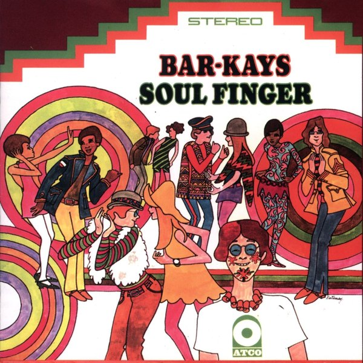
CRVI000336The Bar-Kays - Soul Finger
Designer unknown · Volt · 1967
Designer unknown · Volt · 1967
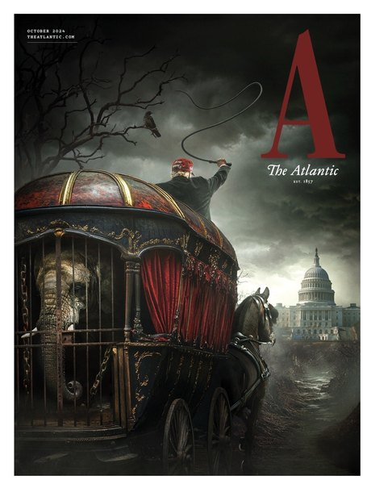
CRVI000475Justin Metz - The Atlantic, October 2024
The Atlantic October · 2024
The Atlantic October · 2024
CRVI000452Derek Birdsall - Reconstructing Social Psychology
Cover for Nigel Armistead · Penguin Education · 1972
Cover for Nigel Armistead · Penguin Education · 1972
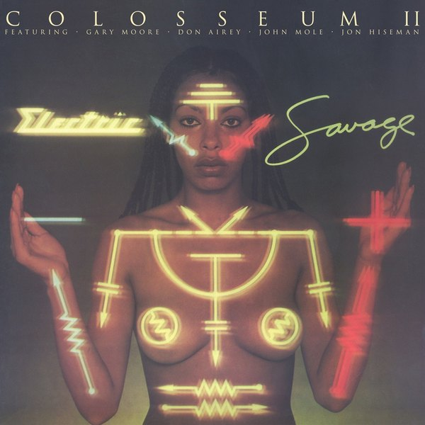
CRVI000164Colosseum II - Electric Savage
Designed by John Pasche · MCA MCF2800 · 1977
Designed by John Pasche · MCA MCF2800 · 1977
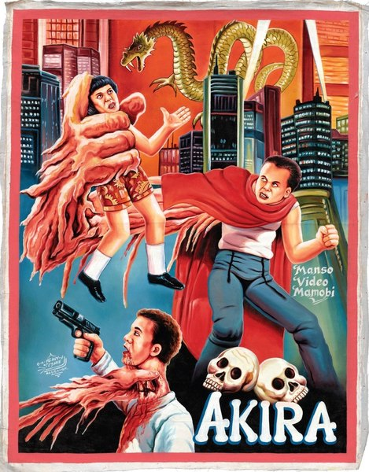
CRVI000681Heavy J - Akira
Hand-painted Ghanaian mobile cinema poster
Hand-painted Ghanaian mobile cinema poster
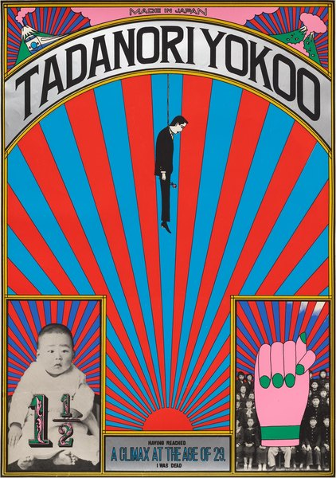
CRVI000116Tadanori Yokoo - Made in Japan, Tadanori Yokoo, Having Reached a Climax at the Age of 29, I Was Dead
Self-portrait poster · 1965
Self-portrait poster · 1965
CRVI000318Tosca - Suzuki
Designer unknown · G-Stone · 2000
Designer unknown · G-Stone · 2000
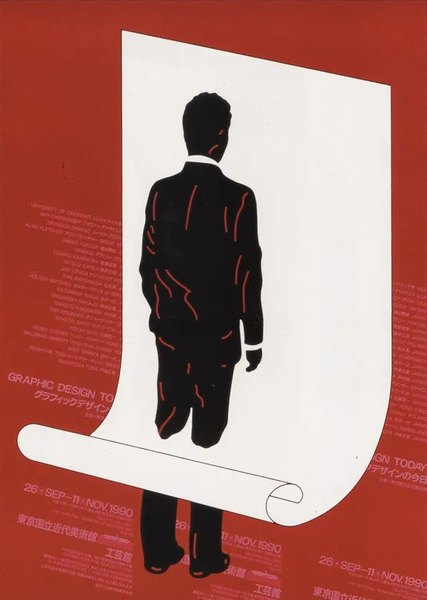
CRVI000136Shigeo Fukuda - [Poster: figure walking off a curling sheet of paper]
Title not established
Title not established
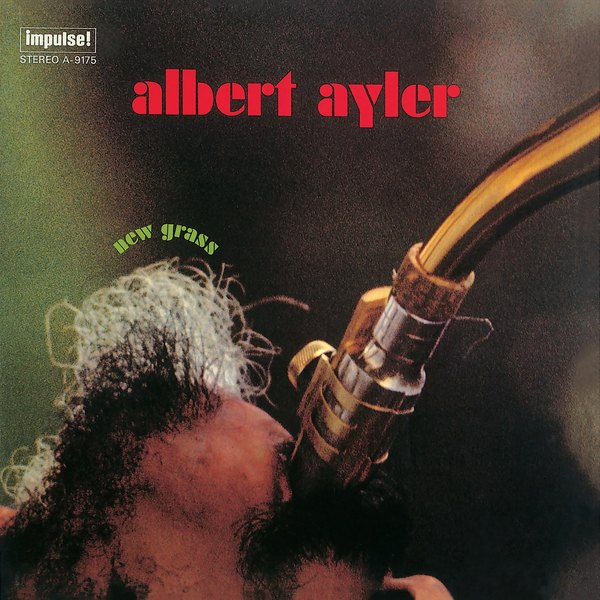
CRVI000167Albert Ayler - New Grass
Designer unknown · 1969
Designer unknown · 1969
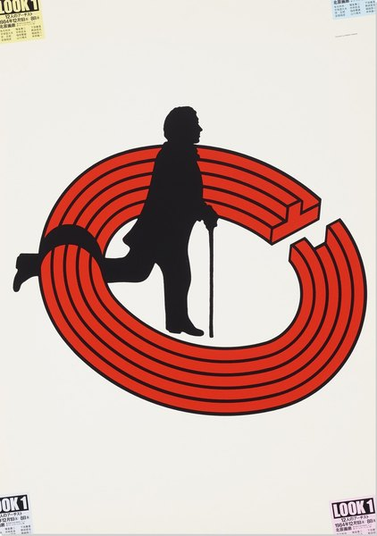
CRVI000122Shigeo Fukuda - [Poster: figure walking through a red spiral, LOOK series]
Title not established
Title not established
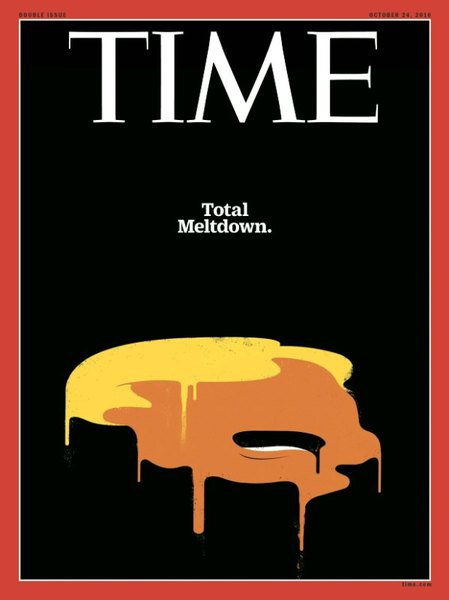
CRVI000633D.W. Pine, Edel Rodriguez - Total Meltdown
TIME, October 24 2016 · 2016
TIME, October 24 2016 · 2016
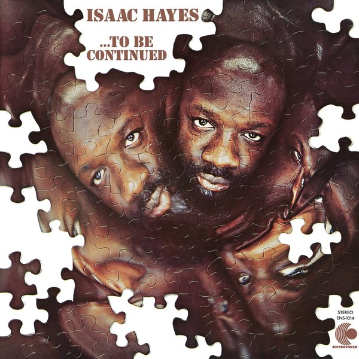
CRVI000355Isaac Hayes - ...To Be Continued
Designer unknown · Enterprise · 1970
Designer unknown · Enterprise · 1970
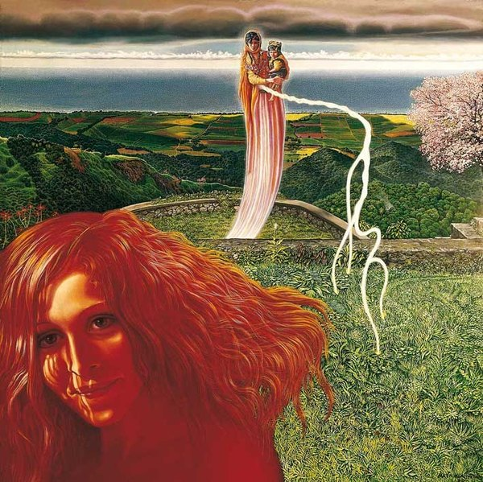
CRVI001241Mati Klarwein - Godmother
Painting · plate V25-Godmother on the artist's own site
Painting · plate V25-Godmother on the artist's own site
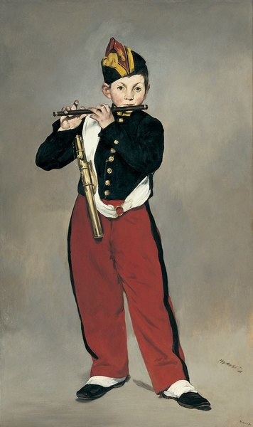
CRVI001015Édouard Manet - Le Fifre (The Fifer)
Oil on canvas · Musée d'Orsay, Paris · 1866
Oil on canvas · Musée d'Orsay, Paris · 1866
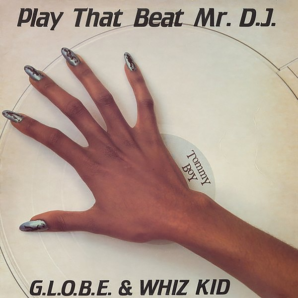
CRVI000408G.L.O.B.E. & Whiz Kid - Play That Beat Mr. D.J.
Designer unknown · Tommy Boy · 1983
Designer unknown · Tommy Boy · 1983
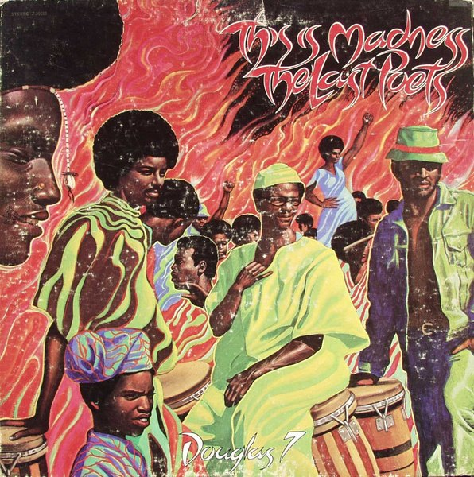
CRVI001199The Last Poets - This Is Madness
Painting by Mati Klarwein · Douglas 7 · 1971
Painting by Mati Klarwein · Douglas 7 · 1971
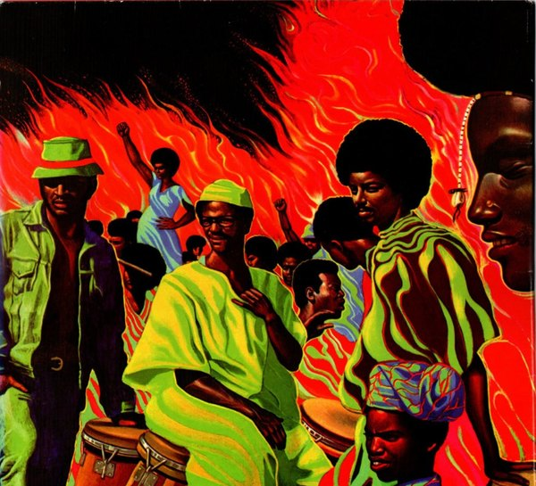
CRVI001187Mati Klarwein - The Last Poets, This Is Madness — back cover painting
Painting · 1971
Painting · 1971
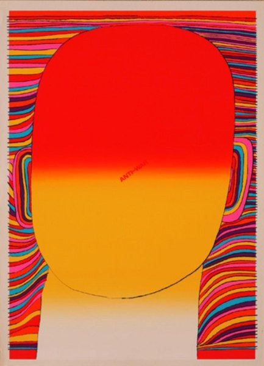
CRVI001039Kiyoshi Awazu - Untitled poster
AGI (Alliance Graphique Internationale) member archive
AGI (Alliance Graphique Internationale) member archive
CRVI000198Unknown - Nope
Reaction GIF · 77 frames, 3.9s loop
Reaction GIF · 77 frames, 3.9s loop
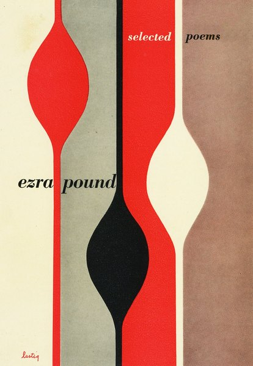
CRVI000575Alvin Lustig - Selected Poems
Ezra Pound · New Directions, New Classics NC22 · 1949
Ezra Pound · New Directions, New Classics NC22 · 1949
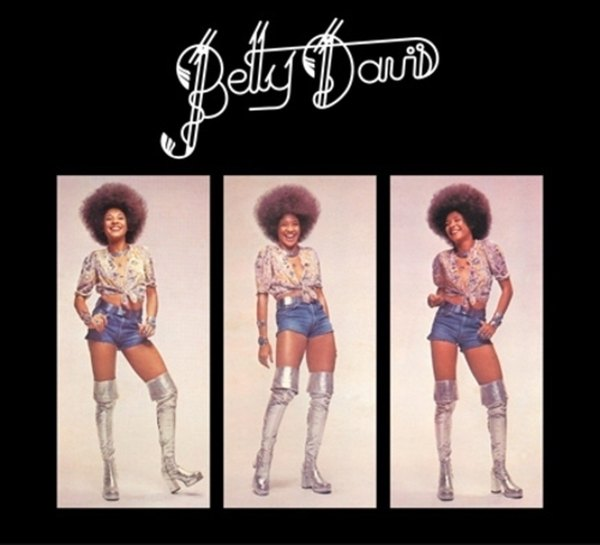
CRVI000353Betty Davis - Betty Davis
Designer unknown · Just Sunshine · 1973
Designer unknown · Just Sunshine · 1973
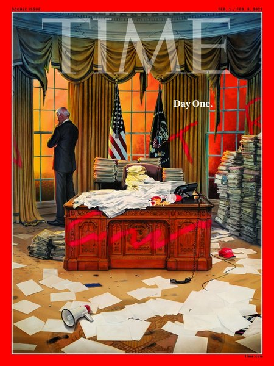
CRVI000550D.W. Pine - Day One.
TIME, February 1-8, 2021 · 2021
TIME, February 1-8, 2021 · 2021
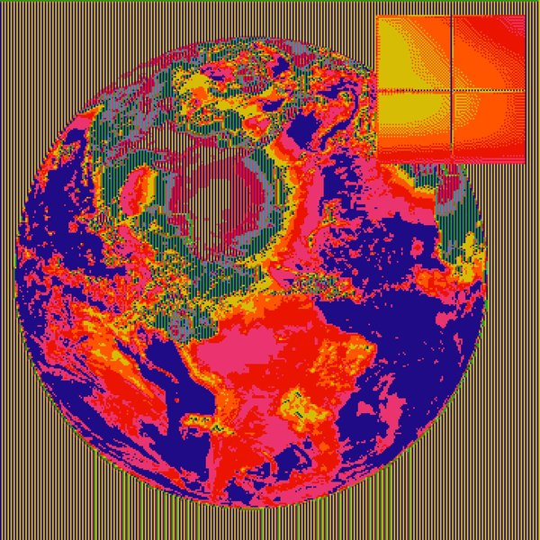
CRVI000875John Provencher - [Bloomberg, weather]
Bloomberg Businessweek
Bloomberg Businessweek
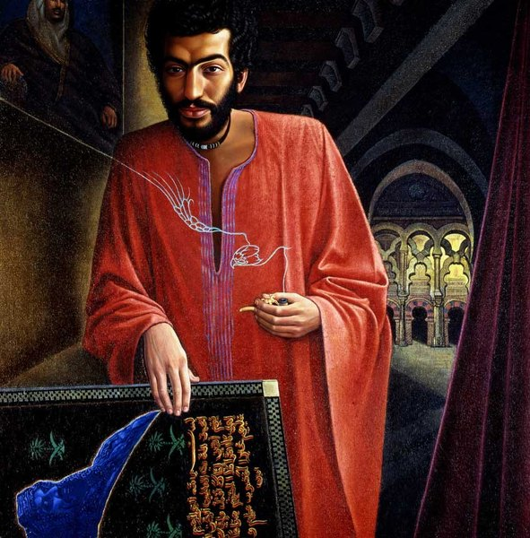
CRVI001218Mati Klarwein - Untitled
Painting · plate P18-vol2-88 on the artist's own site
Painting · plate P18-vol2-88 on the artist's own site
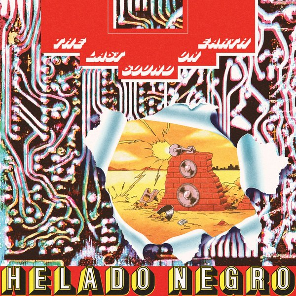
CRVI000713Helado Negro - The Last Sound On Earth
Designed by Robert Beatty · 2025
Designed by Robert Beatty · 2025
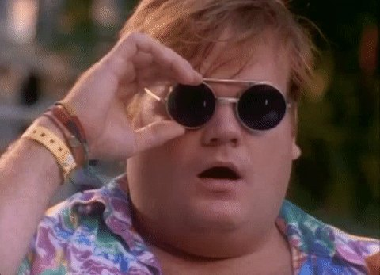
CRVI000208Unknown - Whoa
Reaction GIF · Chris Farley · 32 frames, 1.4s loop
Reaction GIF · Chris Farley · 32 frames, 1.4s loop
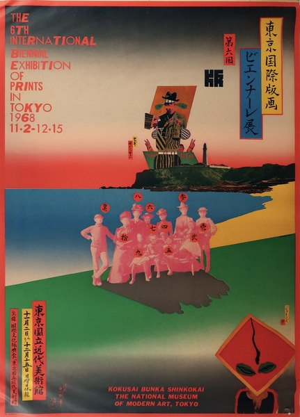
CRVI000132Tadanori Yokoo - The 5th International Biennial Exhibition of Prints in Tokyo
The National Museum of Modern Art, Tokyo · 11.2–12.15 · 1966
The National Museum of Modern Art, Tokyo · 11.2–12.15 · 1966
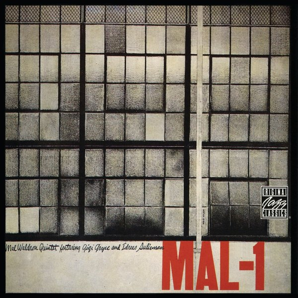
CRVI000154Mal Waldron - Mal-1
Designed by Reid Miles · Prestige LP 7090 · 1956
Designed by Reid Miles · Prestige LP 7090 · 1956
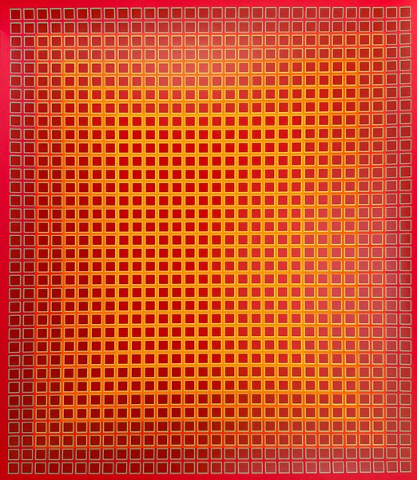
CRVI000862Julian Stanczak - Sequential Chroma
Screen print on paper · 76.8 × 65.4 cm · 1978
Screen print on paper · 76.8 × 65.4 cm · 1978
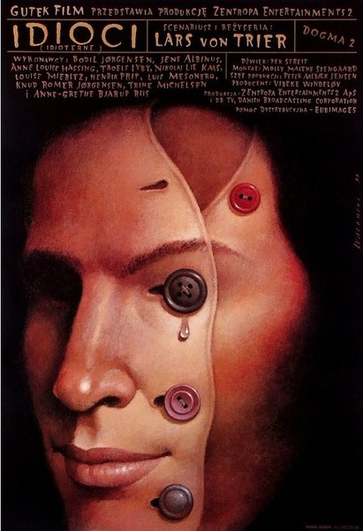
CRVI000256Wiesław Wałkuski - The Idiots
Film Poster Designed By Wiesław Wałkuski · 1999 · 1999
Film Poster Designed By Wiesław Wałkuski · 1999 · 1999
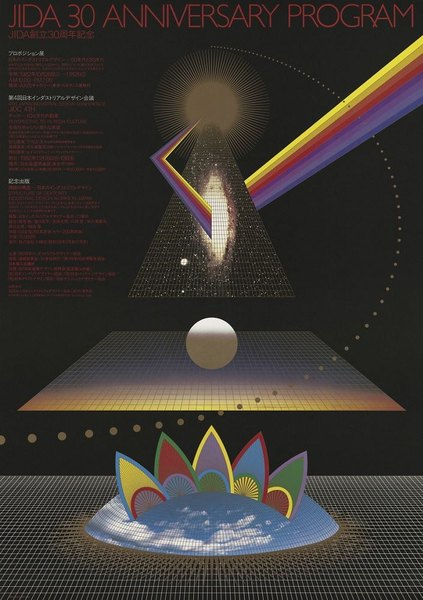
CRVI000159Kazumasa Nagai - JIDA 30th Anniversary Program
Designed by Kazumasa Nagai · 1982
Designed by Kazumasa Nagai · 1982
CRVI000700Heavy J - Sister Act
Hand-painted Ghanaian film poster
Hand-painted Ghanaian film poster
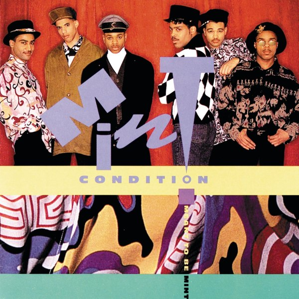
CRVI000373Mint Condition - Meant To Be Mint
Designer unknown · Perspective · 1991
Designer unknown · Perspective · 1991
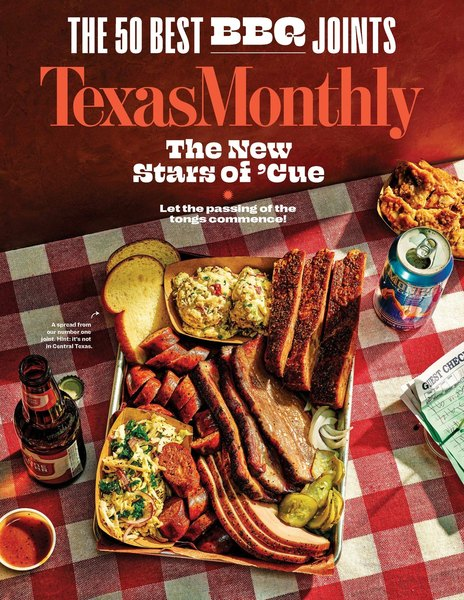
CRVI000546Emily Kimbro - The 50 Best BBQ Joints
Texas Monthly, November 2021 · 2021
Texas Monthly, November 2021 · 2021
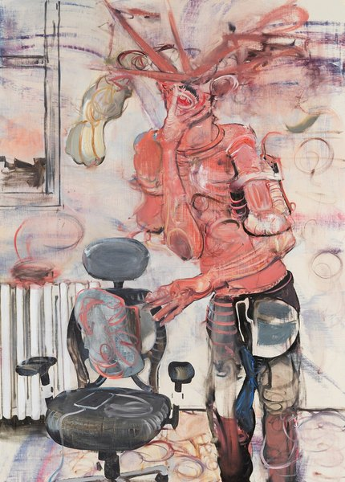
CRVI001031Adrian Ghenie - Weltwehmut
Albertina, Vienna · Infinitart Foundation · 2024
Albertina, Vienna · Infinitart Foundation · 2024
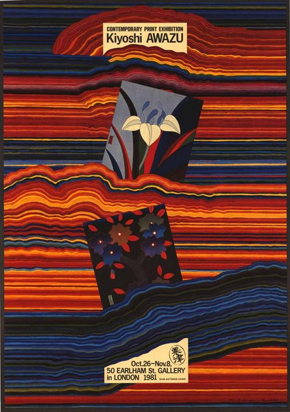
CRVI001043Kiyoshi Awazu - Contemporary Print Exhibition, 50 Earlham Street Gallery, London
Poster · 1981
Poster · 1981
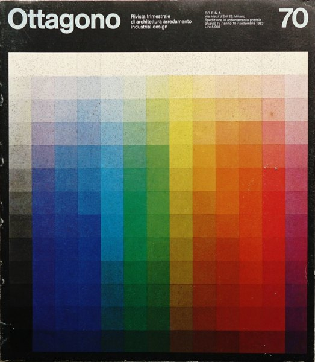
CRVI000840Ottagono - Ottagono 70
settembre 1983 · anno 18 · 1983
settembre 1983 · anno 18 · 1983
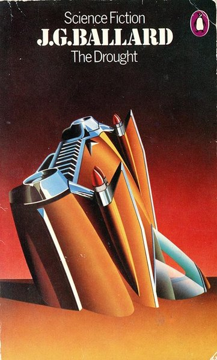
CRVI000444David Pelham - The Drought
Cover for J. G. Ballard · Penguin Science Fiction · 1974
Cover for J. G. Ballard · Penguin Science Fiction · 1974
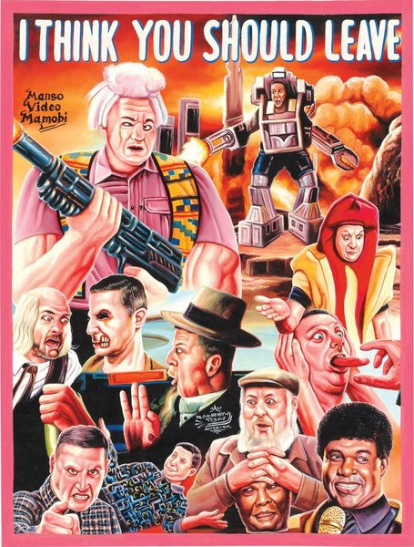
CRVI000709Heavy J - I Think You Should Leave
Hand-painted Ghanaian film poster
Hand-painted Ghanaian film poster
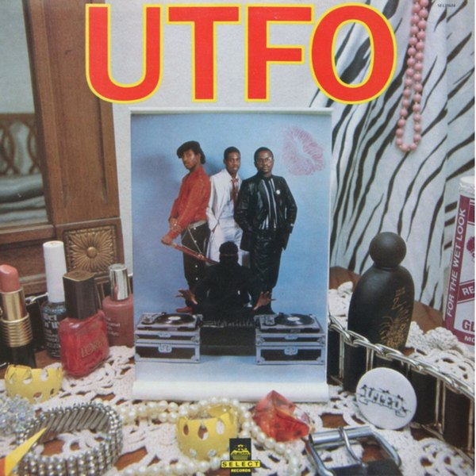
CRVI000410UTFO - UTFO
Designer unknown · Selecf · 1985
Designer unknown · Selecf · 1985
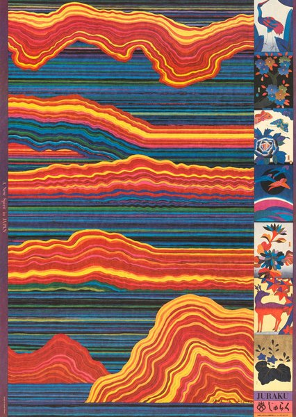
CRVI001045Kiyoshi Awazu - Untitled poster
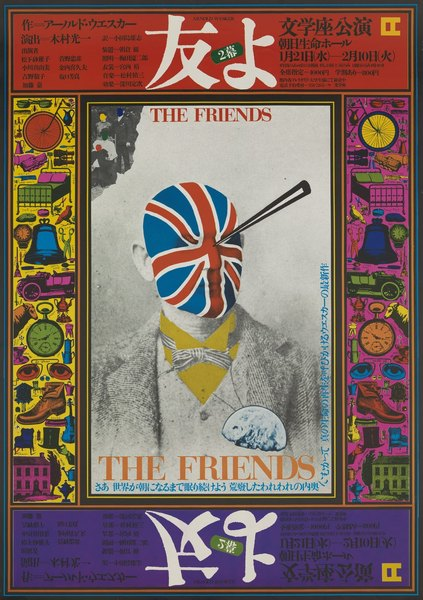
CRVI001038Kiyoshi Awazu - The Friends
Offset lithograph, 28½ × 20¼ in. · LACMA, Marc Treib Collection · 1969
Offset lithograph, 28½ × 20¼ in. · LACMA, Marc Treib Collection · 1969
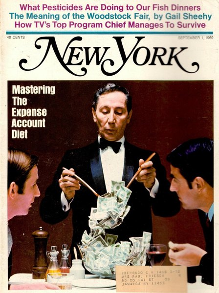
CRVI000587Unknown - Mastering the Expense Account Diet
New York, September 1, 1969 · 1969
New York, September 1, 1969 · 1969
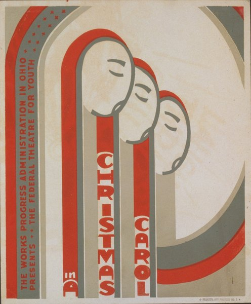
CRVI000583Artist unknown - A Christmas Carol
Federal Theatre for Youth · Works Progress Administration in Ohio · between 1936 and 1941
Federal Theatre for Youth · Works Progress Administration in Ohio · between 1936 and 1941
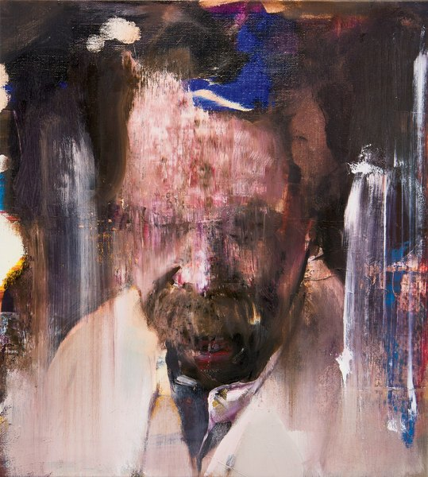
CRVI001034Adrian Ghenie - Untitled painting
Published in Interview
Published in Interview
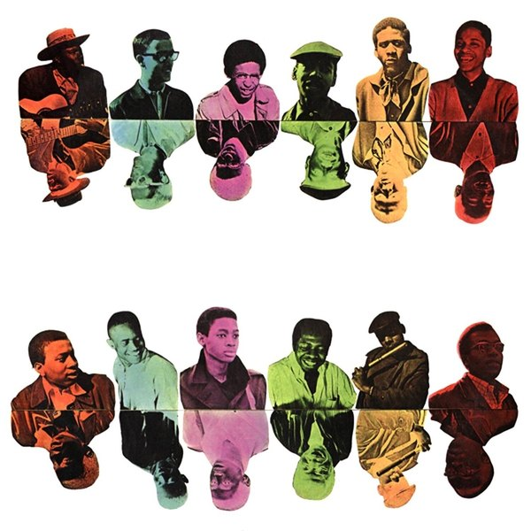
CRVI000423Har-You Percussion Group - The Har-You Percussion Group
Designer unknown · ESP Disk · 1969
Designer unknown · ESP Disk · 1969
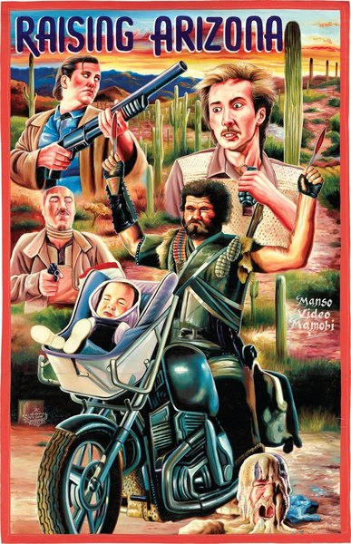
CRVI000702Heavy J - Raising Arizona
Hand-painted Ghanaian film poster
Hand-painted Ghanaian film poster
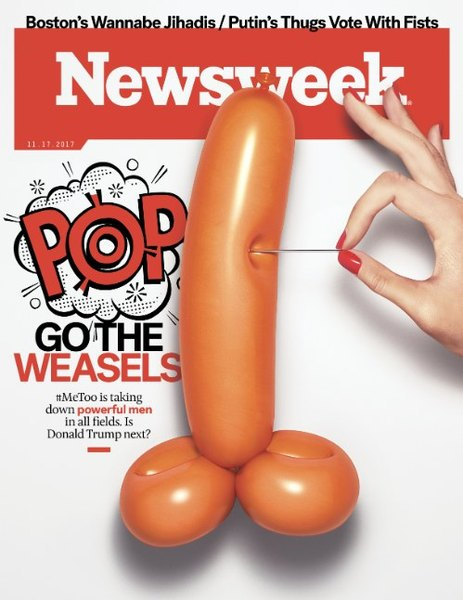
CRVI000632Michael Goesele, Justin Metz - Pop Go the Weasels
Newsweek, November 17, 2017 · 2017
Newsweek, November 17, 2017 · 2017
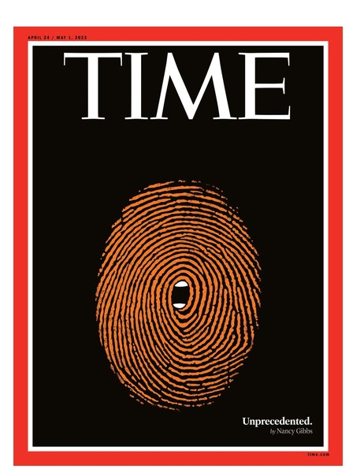
CRVI000512D.W. Pine - Unprecedented.
TIME, April 24/May 1, 2023 · 2023
TIME, April 24/May 1, 2023 · 2023
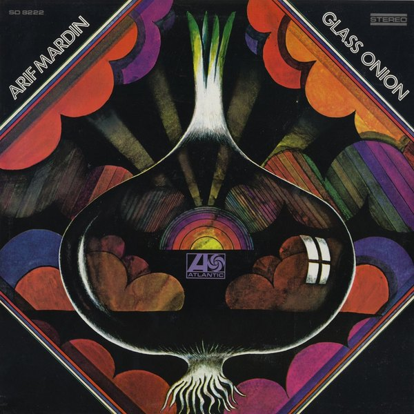
CRVI000339Arif Mardin - Glass Onion
Designer unknown · Atlantic · 1969
Designer unknown · Atlantic · 1969
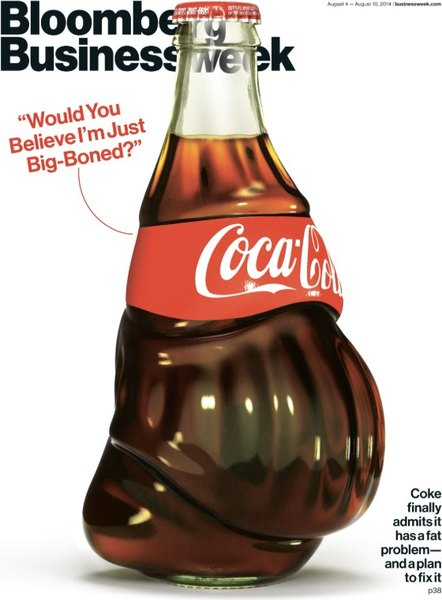
CRVI000652Unknown - Coke Finally Admits It Has a Fat Problem--And a Plan to Fix It
Bloomberg Businessweek, August 4-10, 2014 · 2014
Bloomberg Businessweek, August 4-10, 2014 · 2014
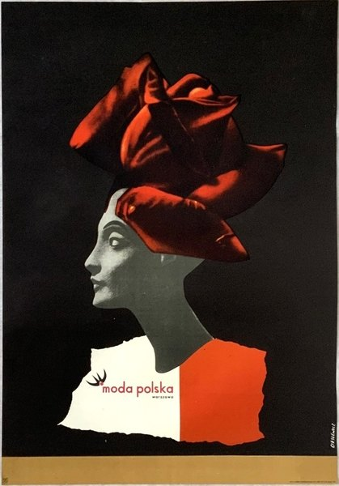
CRVI000263Roman Cieślewicz - Polish Fashion
Advertising Poster · 1972 · 1972
Advertising Poster · 1972 · 1972
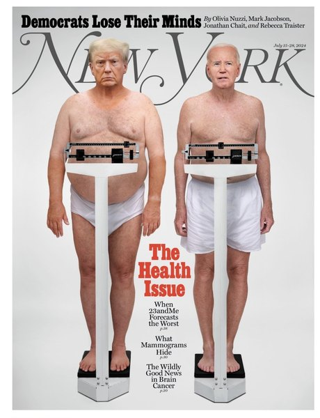
CRVI000479Martin Schoeller - The Health Issue
New York, July 15-28, 2024 · 2024
New York, July 15-28, 2024 · 2024
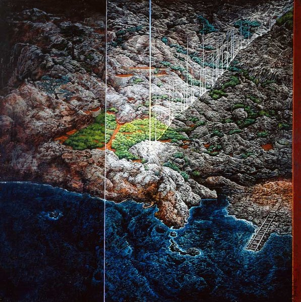
CRVI001209Sonny Rollins - The Sound Of Sonny
Designed by Paul Bacon, photograph by Paul Weller · Riverside Records RLP 12-241 · 1957
Designed by Paul Bacon, photograph by Paul Weller · Riverside Records RLP 12-241 · 1957
CRVI000600Unknown - When Was the Last Time You Called Your Mother?
New York, May 7, 1979 · 1979
New York, May 7, 1979 · 1979
CRVI000115Yusaku Kamekura - Tokyo 1964 — Starting Line
Official poster, Games of the XVIII Olympiad · photograph Osamu Hayasaki · 1964
Official poster, Games of the XVIII Olympiad · photograph Osamu Hayasaki · 1964
CRVI000761Waldemar Świerzy - Czas apokalipsy
Apocalypse Now · Polish film poster · 1981
Apocalypse Now · Polish film poster · 1981
CRVI000676Tom Alberty, Bobby Doherty - The Golden Age of Pods
New York, March 18-31, 2019 · 2019
New York, March 18-31, 2019 · 2019
CRVI000545James Van Fleteren - Build a Better Breakfast Sandwich
EatingWell, May 2021 · 2021
EatingWell, May 2021 · 2021
CRVI001216Pharoah Sanders - Karma
Designed by Robert & Barbara Flynn, photograph by Chuck Stewart · Impulse! AS-9181 · 1969
Designed by Robert & Barbara Flynn, photograph by Chuck Stewart · Impulse! AS-9181 · 1969
CRVI000730Robert Beatty - Floodgate Companion
Spread · self-published
Spread · self-published
CRVI000601Unknown - Replacing the Irreplaceable
New York, October 22, 1979 · 1979
New York, October 22, 1979 · 1979
CRVI001047 - Japanese poster for Jean-Luc Godard's 'Week End'
Film poster
Film poster
CRVI000698Heavy J - Tampopo
Hand-painted Ghanaian film poster
Hand-painted Ghanaian film poster
CRVI001245Mati Klarwein - Clone (unfinished)
Painting · plate V32-clone-unfinished on the artist's own site
Painting · plate V32-clone-unfinished on the artist's own site
CRVI000201Unknown - Ohhhhh
Reaction GIF · 54 frames, 2.2s loop
Reaction GIF · 54 frames, 2.2s loop
CRVI001202Mati Klarwein - Untitled
Painting · plate R16-vol3-56 on the artist's own site
Painting · plate R16-vol3-56 on the artist's own site
CRVI001249Mati Klarwein - Nativity
Painting · plate V03-Nativity on the artist's own site
Painting · plate V03-Nativity on the artist's own site
CRVI000725The Weeknd - Dawn FM
Designed by Robert Beatty · 2022
Designed by Robert Beatty · 2022
CRVI001097Kim Laughton - Untitled
CRVI000800Joseph Beuys - [Beuys with a rose in a graduated cylinder]
Signed photograph
Signed photograph
CRVI001164Lee Morgan - Cornbread
Designed by Reid Miles, photograph by Francis Wolff · Blue Note BST 84222 · 1967
Designed by Reid Miles, photograph by Francis Wolff · Blue Note BST 84222 · 1967
CRVI000784Ivan Chermayeff - By the Sword Divided
Mobil Masterpiece Theatre · 1986
Mobil Masterpiece Theatre · 1986
CRVI000711Tame Impala - Disciples
Designed by Robert Beatty · 2015
Designed by Robert Beatty · 2015
CRVI000257Lech Majewski - Thank God It's Friday
Film Poster Designed By Lech Majewski · 1979 · 1979
Film Poster Designed By Lech Majewski · 1979 · 1979
CRVI001143Jackie McLean - Destination... Out!
Designed by Larry Miller, photograph by Francis Wolff · Blue Note BLP 4165 · 1964
Designed by Larry Miller, photograph by Francis Wolff · Blue Note BLP 4165 · 1964
CRVI000873John Provencher - [On, Clubhouse Paris]
On · Clubhouse Paris
On · Clubhouse Paris
CRVI000445John Griffith - The Black Cloud
Cover for Fred Hoyle · Penguin
Cover for Fred Hoyle · Penguin
CRVI000554Thomas Alberty - She Has Her Mother's Eyes. And Agent.
New York, December 19, 2022 · 2022
New York, December 19, 2022 · 2022

CRVI000207Unknown - Wait, What
Reaction GIF · 81 frames, 3.2s loop
Reaction GIF · 81 frames, 3.2s loop
CRVI000581Alvin Lustig - Twenty-Third Commencement
Beverly Hills High School · 1940
Beverly Hills High School · 1940
CRVI000345Sly & The Family Stone - A Whole New Thing (Bonus Tracks Edition) [2007 Remaster]
Designer unknown · Epic · 1967
Designer unknown · Epic · 1967
CRVI000194Unknown - Dunno
Reaction GIF · 50 frames, 3.5s loop
Reaction GIF · 50 frames, 3.5s loop
CRVI000488Stella Ragas - The Takeover
New York, May 6-19, 2024 · 2024
New York, May 6-19, 2024 · 2024
CRVI000082Klaus Weiss - Time Signals
Designer unknown · Selected Sound · 1978
Designer unknown · Selected Sound · 1978
CRVI001150Jimmy Smith & Wes Montgomery - Jimmy & Wes: The Dynamic Duo
Designed by Acy Lehman, photograph by Chuck Stewart · Verve Records V6-8678 · 1966
Designed by Acy Lehman, photograph by Chuck Stewart · Verve Records V6-8678 · 1966
CRVI000835Mona Chalabi - Congratulations, You’re A Parent! Here’s $1. Now Take This Quiz…
New York Magazine
New York Magazine
CRVI000848form - form 8
Internationale Revue · 1959 · 1959
Internationale Revue · 1959 · 1959
CRVI000371The Neville Brothers - Fiyo On The Bayou
Designer unknown · ASM · 1981
Designer unknown · ASM · 1981
CRVI001108Martin Wong - Portrait of Mikey Piñero at Ridge Street and Stanton
Acrylic on canvas, 72 × 72 in · also titled “La Vera de Nuyorico: Miguel Piñero” · 1985
Acrylic on canvas, 72 × 72 in · also titled “La Vera de Nuyorico: Miguel Piñero” · 1985
CRVI000843domus - domus 1109
February 2026 · 2026
February 2026 · 2026
CRVI001030Adrian Ghenie - Untitled painting
Oil on canvas · Sold Sotheby's London
Oil on canvas · Sold Sotheby's London
CRVI001042Kiyoshi Awazu - Poster Nippon
Screenprint · LACMA, Marc Treib Collection · 1972
Screenprint · LACMA, Marc Treib Collection · 1972
CRVI000187E. McKnight Kauffer - Point Counter Point
Dust jacket for Aldous Huxley's Point Counter Point · The Modern Library, New York · 1942
Dust jacket for Aldous Huxley's Point Counter Point · The Modern Library, New York · 1942
CRVI001200The Last Poets - Holy Terror
Painting by Mati Klarwein · Rykodisc RCD 10319 · 1993
Painting by Mati Klarwein · Rykodisc RCD 10319 · 1993
CRVI001170Ronnie Laws - Pressure Sensitive
Designed by Bob Cato, artwork by Peter Lloyd · Blue Note BN-LA452-G · 1975
Designed by Bob Cato, artwork by Peter Lloyd · Blue Note BN-LA452-G · 1975
CRVI000189Unknown - Nope
Reaction GIF cut from TMZ footage · Rihanna leaving a club · 49 frames, 3.9s loop · 2014
Reaction GIF cut from TMZ footage · Rihanna leaving a club · 49 frames, 3.9s loop · 2014
CRVI000267Unforscene - Fingers And Thumbs
Designer unknown · Tru Thoughts · 2008
Designer unknown · Tru Thoughts · 2008
CRVI001112El Lissitzky - Die Kunstismen / Les Ismes de l’Art / The Isms of Art, 1914–1924
Book cover · edited by El Lissitzky and Hans Arp · Eugen Rentsch, Erlenbach-Zürich · 1925
Book cover · edited by El Lissitzky and Hans Arp · Eugen Rentsch, Erlenbach-Zürich · 1925
CRVI000624David Plunkert - Blowhard
The New Yorker, August 28, 2017 · 2017
The New Yorker, August 28, 2017 · 2017
CRVI000446Unknown - The New Men
Cover for C. P. Snow · Penguin
Cover for C. P. Snow · Penguin
CRVI000612Unknown - Scenes From New York's Therapy Crisis
New York, October 20, 1997 · 1997
New York, October 20, 1997 · 1997
CRVI000691Mr. Nana Agyq - Austin Powers in Goldmember
Hand-painted Ghanaian film poster
Hand-painted Ghanaian film poster
CRVI001173The Who - A Quick One
Designed by Alan Aldridge · Reaction 593 002 · 1966
Designed by Alan Aldridge · Reaction 593 002 · 1966
CRVI000252Lech Majewski - Ras le cœur
Film Poster Designed By Lech Majewski · 1980 · 1980
Film Poster Designed By Lech Majewski · 1980 · 1980
CRVI000650Unknown - Health
New York, June 9-15, 2014 · 2014
New York, June 9-15, 2014 · 2014
CRVI001066David Rudnick - Terrain (front)
Published by It's Nice That
Published by It's Nice That
CRVI000682Mr. Nana Agyq - Gummo
Hand-painted Ghanaian film poster · after the film by Harmony Korine
Hand-painted Ghanaian film poster · after the film by Harmony Korine
CRVI001252Joe Beck - Beck
Designed by Bob Ciano, painting by Mati Klarwein · Kudu KU-21 S1 · 1975
Designed by Bob Ciano, painting by Mati Klarwein · Kudu KU-21 S1 · 1975
CRVI000245Peter Bentley - Urgent Copy
Cover for Anthony Burgess · Penguin
Cover for Anthony Burgess · Penguin
CRVI000737Robert Beatty - Untitled
Album cover · artist and title unrecorded · Trendland plate 06
Album cover · artist and title unrecorded · Trendland plate 06
CRVI001195Mati Klarwein - Bitches Brew
Painting · the whole gatefold work · 1969
Painting · the whole gatefold work · 1969
CRVI001132Grant Green - Goin' West
Designer unrecorded · Blue Note BST 84310 · 1969
Designer unrecorded · Blue Note BST 84310 · 1969
CRVI000425Bob Thompson and His Orchestra & Chorus - Just For Kicks
Designer unknown · RCA Victor · 1959
Designer unknown · RCA Victor · 1959

CRVI000204Unknown - Roll Safe
Reaction GIF · Kayode Ewumi as Reece Simpson · 21 frames, 1.1s loop · 2016
Reaction GIF · Kayode Ewumi as Reece Simpson · 21 frames, 1.1s loop · 2016
CRVI000674Magnus Berger, Jennifer Pastore, Campbell Addy - The Innovators Issue
WSJ. Magazine, November 2019 · 2019
WSJ. Magazine, November 2019 · 2019
CRVI001142Jackie McLean - Demon's Dance
Designed by Bob Venosa, artwork by Mati Klarwein · Blue Note BST 84345 · 1970
Designed by Bob Venosa, artwork by Mati Klarwein · Blue Note BST 84345 · 1970
CRVI000032Earle Brown - Music By Earle Brown
Artwork by Judith Lerner · Composers Recordings Inc. · 1974
Artwork by Judith Lerner · Composers Recordings Inc. · 1974
CRVI000120Tadanori Yokoo - Tadanori Yokoo — Stedelijk Museum Amsterdam
Exhibition poster, 22.2 t/m 14.4 1974 · 1974
Exhibition poster, 22.2 t/m 14.4 1974 · 1974
CRVI000358Stevie Wonder - Fulfillingness' First Finale
Designer unknown · Tamla · 1974
Designer unknown · Tamla · 1974
CRVI000563Kadir Nelson - High Style
The New Yorker, February 14 and 21, 2022 · 2022
The New Yorker, February 14 and 21, 2022 · 2022
CRVI001091Kim Laughton - Untitled
CRVI000141Shin Matsunaga - Shiseido Sun Oil
Offset lithograph · 1971
Offset lithograph · 1971
CRVI000516Unknown - Erykah the Almighty
The Cut, September 11-24, 2023 · 2023
The Cut, September 11-24, 2023 · 2023
CRVI000443David Pelham - The Drowned World
Cover for J. G. Ballard · Penguin Science Fiction · 1974
Cover for J. G. Ballard · Penguin Science Fiction · 1974
CRVI000348Eddie Hazel - Game, Dames And Guitar Thangs
Designer unknown · Warner · 1977
Designer unknown · Warner · 1977
CRVI000467Unknown - Transition Game
Bloomberg Businessweek
Bloomberg Businessweek
CRVI001100Kim Laughton - Untitled
CRVI000282Unknown - Caron's Face Powder
Poster
Poster
CRVI000332100 Proof (Aged In Soul) - Somebody's Been Sleeping in My Bed
Designer unknown · HotWax · 1970
Designer unknown · HotWax · 1970
CRVI001080Kim Laughton - Untitled
CRVI001234Mati Klarwein - Virgin Mary
Painting · plate V20-Virgin-Mary on the artist's own site
Painting · plate V20-Virgin-Mary on the artist's own site
CRVI001125Dexter Gordon - Go
Designed by Reid Miles, photograph by Francis Wolff · Blue Note BLP 4112 · 1962
Designed by Reid Miles, photograph by Francis Wolff · Blue Note BLP 4112 · 1962
CRVI001021Gustave Courbet - L'Homme blessé (The Wounded Man)
Oil on canvas, 81.5 × 97.5 cm · Musée d'Orsay, Paris · 1844–1854
Oil on canvas, 81.5 × 97.5 cm · Musée d'Orsay, Paris · 1844–1854
CRVI001109Constantin Aladjalov - International Exhibition of Modern Art, arranged by the Société Anonyme for the Brooklyn Museum
Exhibition catalogue cover · Brooklyn Museum, November–December 1926 · 1926
Exhibition catalogue cover · Brooklyn Museum, November–December 1926 · 1926
CRVI000390Fennesz - Endless Summer
Designer unknown · 2001
Designer unknown · 2001
CRVI001033Adrian Ghenie - Untitled painting
Galerie Judin, Berlin
Galerie Judin, Berlin
CRVI001107Martin Wong - Psychiatrists Testify: Demon Dogs Drive Man to Murder
Acrylic on canvas, 36 × 48 in · also titled “Demon Dogs Drive Man to Murder” · 1980
Acrylic on canvas, 36 × 48 in · also titled “Demon Dogs Drive Man to Murder” · 1980
CRVI000595Unknown - TV vs. the Pols: Who's Using Whom?
New York, June 26, 1972 · 1972
New York, June 26, 1972 · 1972
CRVI000672Magnus Berger, Jennifer Pastore, Ethan James Green - The Innovators Issue
WSJ. Magazine, November 2019 · 2019
WSJ. Magazine, November 2019 · 2019
CRVI000096Stock, Hausen & Walkman - Organ Transplants Vol. 1
Designer unknown · Hot Air · 1996
Designer unknown · Hot Air · 1996
CRVI001103Utagawa Yoshifusa - Kiyomori's Visit to Nunobiki Waterfall: The Ghost of Yoshihira Taking Revenge on Nanba
Woodblock-printed triptych (nishiki-e), ink and color on paper · Edo period · The Metropolitan Museum of Art, New York · 1856
Woodblock-printed triptych (nishiki-e), ink and color on paper · Edo period · The Metropolitan Museum of Art, New York · 1856
CRVI000369The Deele - Eyes Of A Stranger
Designer unknown · Solar · 1987
Designer unknown · Solar · 1987
CRVI000677Tom Alberty, Eva O'Leary - What Instagram Did to Me
New York, September 16-29, 2019 · 2019
New York, September 16-29, 2019 · 2019
CRVI000363Billy Paul - 360 Degrees of Billy Paul
Designer unknown · Philadelphia International · 1972
Designer unknown · Philadelphia International · 1972
CRVI000397Frankie Knuckles - Beyond The Mix
Designer unknown · Virgin · 1991
Designer unknown · Virgin · 1991
CRVI001212Thelonious Monk - Underground
Designed by John Berg, Richard Mantel, photograph by Horn/Griner · Columbia CS 9632 · 1968
Designed by John Berg, Richard Mantel, photograph by Horn/Griner · Columbia CS 9632 · 1968
CRVI001024Gustave Courbet - Les Demoiselles des bords de la Seine (été)
Oil on canvas, 174 × 206 cm · Petit Palais, Paris · 1856–1857
Oil on canvas, 174 × 206 cm · Petit Palais, Paris · 1856–1857
CRVI00004023 Skidoo - Seven Songs
Artwork by Neville Brody · Fetish Records · 1982
Artwork by Neville Brody · Fetish Records · 1982
CRVI001228Mati Klarwein - Untitled
Painting · plate P15-vol2-82 on the artist's own site
Painting · plate P15-vol2-82 on the artist's own site

CRVI000213Unknown - Stare
Reaction GIF · Walton Goggins as Rick Hatchett, The White Lotus · 72 frames, 3.6s loop · 2025
Reaction GIF · Walton Goggins as Rick Hatchett, The White Lotus · 72 frames, 3.6s loop · 2025
CRVI000660Unknown - How to Make It in the Art World
New York, April 30, 2012 · 2012
New York, April 30, 2012 · 2012
CRVI000113Kiyoshi Awazu - La Chinoise
Japanese poster for the first Japanese release of Godard's film · Athos · 1967
Japanese poster for the first Japanese release of Godard's film · Athos · 1967
CRVI000602Unknown - Living With the Computer
New York, January 9, 1984 · 1984
New York, January 9, 1984 · 1984
CRVI000225Unknown - Bumblebee coffin
Ghanaian fantasy coffin · The Art Underground, Museum of International Folk Art, Santa Fe
Ghanaian fantasy coffin · The Art Underground, Museum of International Folk Art, Santa Fe
CRVI000071David Kanaga - Dyad OGST
Designer unknown · Software · 2013
Designer unknown · Software · 2013
CRVI000351Parlet - Pleasure Principle
Designer unknown · Casablanca · 1978
Designer unknown · Casablanca · 1978
CRVI001062Lezley Saar - Thérèse Raquin
From the series Madwoman in the Attic · 2011
From the series Madwoman in the Attic · 2011
CRVI001231Mati Klarwein - Untitled
Painting · plate P14-vol2-77 on the artist's own site
Painting · plate P14-vol2-77 on the artist's own site
CRVI000753Tetsuya Ishida - Refuel Meal
1996 · 1996
1996 · 1996
CRVI000171Sonny Rollins - The Sound of Sonny
Designer unknown · Riverside RLP 12-241 · 1957
Designer unknown · Riverside RLP 12-241 · 1957
CRVI000617Nejc Prah, Simon Dawson/Bloomberg - Big Changes at the Top
Bloomberg Businessweek, March 19 2018 · 2018
Bloomberg Businessweek, March 19 2018 · 2018
CRVI000756Tetsuya Ishida - Public Property
Kōkyōbutsu · acrylic on canvas · 1999
Kōkyōbutsu · acrylic on canvas · 1999
CRVI000750Tetsuya Ishida - Supermarket
Acrylic on board · 103 × 145.6 cm · 1996
Acrylic on board · 103 × 145.6 cm · 1996
CRVI000775Brownjohn, Chermayeff & Geismar - That New York
About U.S. — Experimental Typography by American Designers · The Composing Room · 1960
About U.S. — Experimental Typography by American Designers · The Composing Room · 1960
CRVI000634Unknown - Single Women
New York, February 22-March 6 2016 · 2016
New York, February 22-March 6 2016 · 2016
CRVI001035Adrian Ghenie - The Flirt
Oil on canvas, 250 × 220 cm · Galerie Judin, Berlin · 2021
Oil on canvas, 250 × 220 cm · Galerie Judin, Berlin · 2021
CRVI000031Telefon Tel Aviv - Map of What Is Effortless
Designed by Joshua Eustis, Charles Cooper · Hefty Records · 2004
Designed by Joshua Eustis, Charles Cooper · Hefty Records · 2004
CRVI000569Anita Kunz - No Photos, Please!
The New Yorker, August 29, 2022 · 2022
The New Yorker, August 29, 2022 · 2022

CRVI000190Unknown - Shrug
Reaction GIF · Comedy Bang! Bang! · 27 frames, 2.7s loop
Reaction GIF · Comedy Bang! Bang! · 27 frames, 2.7s loop
CRVI000594Unknown - Money Advisor: How to Borrow Money… Cleverly
New York, January 24, 1972 · 1972
New York, January 24, 1972 · 1972
CRVI000079John Bender - I Don't Remember Now
Designer unknown · Record Sluts · 1980
Designer unknown · Record Sluts · 1980
CRVI000591Unknown - Doctor Feelgood, You Make Me Feel So Good. Are You Sure It's All Right?
New York, February 8, 1971 · 1971
New York, February 8, 1971 · 1971
CRVI001102Georges Seurat - Models (Poseuses)
Oil on canvas, 200 × 249.9 cm · The Barnes Foundation, Philadelphia · 1886–1888
Oil on canvas, 200 × 249.9 cm · The Barnes Foundation, Philadelphia · 1886–1888
CRVI000076Herva - Kila
Designer unknown · 2015
Designer unknown · 2015
CRVI000675Unknown - The Apology Machine
Bloomberg Businessweek, March 18, 2019 · 2019
Bloomberg Businessweek, March 18, 2019 · 2019
CRVI000148Pharoah Sanders - Tauhid
Designed by Robert (Viceroy) Flynn · Impulse! AS-9138 · 1966
Designed by Robert (Viceroy) Flynn · Impulse! AS-9138 · 1966
CRVI000074F.C. Judd - Electronics Without Tears
Designer unknown · Public Information · 2012
Designer unknown · Public Information · 2012
CRVI000659Unknown - Bang Head Here
Bloomberg Businessweek, May 28–June 3, 2012 · 2012
Bloomberg Businessweek, May 28–June 3, 2012 · 2012
CRVI000565Thomas Alberty - Reasons to Love New York
New York, December 5-18, 2022 · 2022
New York, December 5-18, 2022 · 2022
CRVI000704Farkira - Oppenheimer
Hand-painted Ghanaian film poster
Hand-painted Ghanaian film poster
CRVI000825Seymour Chwast - Canto XVIII, PPG #52
Push Pin Graphic #52 · 46 × 71 cm · 1967
Push Pin Graphic #52 · 46 × 71 cm · 1967
CRVI000139Jutaro Itoh - Hiroshima (orange)
廣島
廣島
CRVI000570Gail Bichler - Boxed In
The New York Times Magazine, December 4, 2022 · 2022
The New York Times Magazine, December 4, 2022 · 2022
CRVI000229Paolo Achenza Trio - Do It
Designer unknown · Right Tempo · 1994
Designer unknown · Right Tempo · 1994
CRVI001026Adrian Ghenie - The Arrival
Oil on canvas, 210 × 165 cm · 2014
Oil on canvas, 210 × 165 cm · 2014
CRVI000442David Pelham - The Demolished Man
Cover for Alfred Bester · Penguin Science Fiction
Cover for Alfred Bester · Penguin Science Fiction
CRVI000319Cornelius - Fantasma
Designer unknown · Trattoria · 1997
Designer unknown · Trattoria · 1997
CRVI000250Peter Bentley - The Wanting Seed
Cover for Anthony Burgess · Penguin
Cover for Anthony Burgess · Penguin
CRVI000524Cian Browne - Taylor Russell
W, January 2023 · 2023
W, January 2023 · 2023
CRVI001253Philippe Entremont, Leonard Bernstein, New York Philharmonic - Bernstein: The Age of Anxiety
Painting by Mati Klarwein · Columbia Masterworks MS 6885 · 1966
Painting by Mati Klarwein · Columbia Masterworks MS 6885 · 1966
CRVI001211Bill Evans Trio - On A Friday Evening
Designed by Christopher Leckie, photograph by Jerome Knill, Phil Bray, Scott Lyons · Craft Recordings CR00301 · 2021
Designed by Christopher Leckie, photograph by Jerome Knill, Phil Bray, Scott Lyons · Craft Recordings CR00301 · 2021
CRVI000313Shut Up and Dance - Dance Before the Police Come
Designer unknown · p And Dance · 1991
Designer unknown · p And Dance · 1991
CRVI001206The Jazz Messengers - The Complete Jazz Messengers At The Cafe Bohemia
Designed by Reid Miles, photograph by Francis Wolff · Blue Note · 1956
Designed by Reid Miles, photograph by Francis Wolff · Blue Note · 1956
CRVI000651Unknown - The Home Issue
Kinfolk, Spring 2014 Brainiest · 2014
Kinfolk, Spring 2014 Brainiest · 2014
CRVI000752Tetsuya Ishida - Awakening
1998 · 1998
1998 · 1998
CRVI000628Barry Blitt - Eustace Vladimirovich Tilley
The New Yorker, March 6, 2017 · 2017
The New Yorker, March 6, 2017 · 2017
CRVI000057B12 - Time Tourist
Designed by The Designers Republic, Trevor Webb · Warp Records · 1996
Designed by The Designers Republic, Trevor Webb · Warp Records · 1996
CRVI001022Gustave Courbet - Le Fou de peur (The Man Mad with Fear)
Oil on paper mounted on canvas, 60.5 × 50.5 cm · Nasjonalmuseet, Oslo · c. 1844–1845
Oil on paper mounted on canvas, 60.5 × 50.5 cm · Nasjonalmuseet, Oslo · c. 1844–1845
CRVI000364The Miracles - City of Angels
Designer unknown · Tamla · 1975
Designer unknown · Tamla · 1975
CRVI001120Bobby Hutcherson - Stick-Up!
Designed by Reid Miles, photograph by Francis Wolff · Blue Note BST 84244 · 1968
Designed by Reid Miles, photograph by Francis Wolff · Blue Note BST 84244 · 1968
CRVI000101p-Ziq - Lunatic Harness
Designer unknown · Planet Mu · 1997
Designer unknown · Planet Mu · 1997
CRVI001214Mati Klarwein - Last Sunset
Painting · plate L24-last-sunset on the artist's own site
Painting · plate L24-last-sunset on the artist's own site
CRVI000588Unknown - The Men of Women's Liberation Have Learned Not to Laugh
New York, May 18, 1970 · 1970
New York, May 18, 1970 · 1970
CRVI000361Betty Wright - Hard to Stop
Designer unknown · TK · 1973
Designer unknown · TK · 1973
CRVI000165Bonzo Dog Band - The Doughnut in Granny's Greenhouse
Designed by Vivian Stanshall
Designed by Vivian Stanshall
CRVI000782Ivan Chermayeff - Ford Madox Ford’s The Good Soldier
Mobil Masterpiece Theatre · 1983
Mobil Masterpiece Theatre · 1983
CRVI000493Bill Mayer - When Pets Escape: The Great Goldfish Invasion
The New York Times for Kids, January 28, 2024 · 2024
The New York Times for Kids, January 28, 2024 · 2024
CRVI000656Unknown - How Blackberry Became a Relic
Bloomberg Businessweek, December 9–1 Photographs from various museums and art libraries 2013 · 2013
Bloomberg Businessweek, December 9–1 Photographs from various museums and art libraries 2013 · 2013
CRVI000592Unknown - Can Anybody Handle the Soaring Costs of Private Schools?
New York, March 29, 1971 · 1971
New York, March 29, 1971 · 1971
CRVI000736Robert Beatty - Untitled
Album cover · artist and title unrecorded · Trendland plate 05
Album cover · artist and title unrecorded · Trendland plate 05
CRVI000879Maurice Denis - L’Oratorio pour « L’Éternel Printemps »
Oil on joined paper laid down on canvas · 142 × 201 cm · 1904
Oil on joined paper laid down on canvas · 142 × 201 cm · 1904
CRVI001248Mati Klarwein - Untitled
Painting · plate R02-vol3-15 on the artist's own site · 1983
Painting · plate R02-vol3-15 on the artist's own site · 1983
CRVI000062Reliq - Minority Report
Artwork by Tomokazu Matsuyama · Noble · 2011
Artwork by Tomokazu Matsuyama · Noble · 2011
CRVI000027Cevdet Erek - Davul
Designed by John Coulthart · 2017
Designed by John Coulthart · 2017
CRVI000625Jody Quon, Christopher Anderson - David Letterman Returns
New York, March 6-19, 2017 · 2017
New York, March 6-19, 2017 · 2017

CRVI000214Unknown - Victoria
Reaction GIF · Parker Posey as Victoria Ratliff, The White Lotus · 117 frames, 3.9s loop · 2025
Reaction GIF · Parker Posey as Victoria Ratliff, The White Lotus · 117 frames, 3.9s loop · 2025
CRVI000055Polygon Window - Surfing on Sine Waves
Artwork by The Designers Republic · Warp Records · 1992
Artwork by The Designers Republic · Warp Records · 1992
CRVI000106Natori Shunsen - Matsumoto Koshiro as the white bearded Ikkyu
from the supplement to the Collection of Shunsen portraits (Shunsen nigao-e shu) series · color woodblock · 1929
from the supplement to the Collection of Shunsen portraits (Shunsen nigao-e shu) series · color woodblock · 1929
CRVI000312The Human League - Reproduction
Designer unknown · Virgin · 1979
Designer unknown · Virgin · 1979
CRVI000083Kuedo - Severant
Designer unknown · Planet Mu · 2011
Designer unknown · Planet Mu · 2011
CRVI001250Mati Klarwein - Landscape Described
Painting · plate landscape-described-1963 on the artist's own site · 1963
Painting · plate landscape-described-1963 on the artist's own site · 1963
CRVI000131Shigeo Fukuda - [Poster: paperclip with legs]
Title not established
Title not established
CRVI000237Bullitnuts - 1st Of The Day
Designer unknown · Pork Recordings · 1996
Designer unknown · Pork Recordings · 1996
CRVI000301Matt Baldwin - Night In The Triangle
Designer unknown · American Dust · 2011
Designer unknown · American Dust · 2011
CRVI001226Mati Klarwein - Untitled
Painting · plate P26-vol2-152 on the artist's own site
Painting · plate P26-vol2-152 on the artist's own site

CRVI000211Unknown - Nonverbal Yes
Reaction GIF · Leslie Bibb as Kate, The White Lotus · 39 frames, 3.9s loop · 2025
Reaction GIF · Leslie Bibb as Kate, The White Lotus · 39 frames, 3.9s loop · 2025
CRVI001151Jimmy Smith - Stay Loose... Jimmy Smith Sings Again
Photograph by Howell Conant · Verve Records V6-8745 · 1968
Photograph by Howell Conant · Verve Records V6-8745 · 1968
CRVI000067Bourbonese Qualk - My Government Is My Soul
Designer unknown · Fünfundvierzig · 1989
Designer unknown · Fünfundvierzig · 1989
CRVI000861Julian Stanczak - Yellow Filtration
Screenprint · 66 × 66 cm · 1981
Screenprint · 66 × 66 cm · 1981
CRVI001242Mati Klarwein - Evil
Painting · plate V24-Evil on the artist's own site
Painting · plate V24-Evil on the artist's own site
CRVI000780Paul Rand - Jacqueline Cochran leg makeup
Advertisement
Advertisement
CRVI000499Leo Jung - The Longest Walk to America
The California Sunday Magazine, April 2020 · 2020
The California Sunday Magazine, April 2020 · 2020
CRVI000206Unknown - Uhhh
Reaction GIF · 46 frames, 4.6s loop
Reaction GIF · 46 frames, 4.6s loop
CRVI000680Magnus Berger, Esmé René, Robert Polidori - The Sistine Chapel
WSJ. Magazine, April 2019 · 2019
WSJ. Magazine, April 2019 · 2019
CRVI000279Wiktor Sadowski - Candide, or Optimism
Theatre Poster · 1986 · 1986
Theatre Poster · 1986 · 1986
CRVI001023Gustave Courbet - L'Homme à la pipe (Self-Portrait, Man with Pipe)
Oil on canvas, 45.8 × 37.8 cm · Musée Fabre, Montpellier · c. 1849
Oil on canvas, 45.8 × 37.8 cm · Musée Fabre, Montpellier · c. 1849
CRVI000329Marvin Gaye & Tammi Terrell - United
Designer unknown · Tamla · 1967
Designer unknown · Tamla · 1967
CRVI000638Tomer Hanuka - Take the L Train
The New Yorker, April 11 2016 · 2016
The New Yorker, April 11 2016 · 2016
CRVI000270Mop Mop - Isle Of Magic
Designer unknown · Agogo · 2013
Designer unknown · Agogo · 2013
CRVI000564Thandiwe Muriu - Global Cool
Virtuoso, September/October 2022 · 2022
Virtuoso, September/October 2022 · 2022
CRVI000716Thee Oh Sees - Joe Westerland
Designed by Robert Beatty · 2025
Designed by Robert Beatty · 2025
CRVI001063Lezley Saar - The Silent Woman
Shown in 'Lezley Saar: Salon des Refusés', California African American Museum, 2017–18
Shown in 'Lezley Saar: Salon des Refusés', California African American Museum, 2017–18
CRVI001166McCoy Tyner - The Real McCoy
Designed by Reid Miles, photograph by Francis Wolff · Blue Note BLP 4264 · 1967
Designed by Reid Miles, photograph by Francis Wolff · Blue Note BLP 4264 · 1967
CRVI000135Shigeo Fukuda - UCC Coffee
Advertising
Advertising
CRVI000259Ryszard Kaja - Dachshund in Films
Poster
Poster
CRVI001204Mati Klarwein - La Profeta
Painting · plate R17-vol3-59 on the artist's own site
Painting · plate R17-vol3-59 on the artist's own site
CRVI000623Lia Kantrowitz, Kitron Neuschatz, Elizabeth Renstrom - Burnout and Escapism
VICE, December 2018 · 2018
VICE, December 2018 · 2018
CRVI001220Mati Klarwein - Untitled
Painting · plate P22-vol2-96 on the artist's own site
Painting · plate P22-vol2-96 on the artist's own site
CRVI000740Robert Beatty - Untitled
Album cover · artist and title unrecorded · Trendland plate 11
Album cover · artist and title unrecorded · Trendland plate 11
CRVI000518Gail Bichler - What Was Twitter, Anyway?
The New York Times Magazine, April 23, 2023 · 2023
The New York Times Magazine, April 23, 2023 · 2023
CRVI000457Janet Halverson - JFK and LBJ
Cover for Tom Wicker · Pelican
Cover for Tom Wicker · Pelican
CRVI000770Paula Scher - Best of Jazz
Lithograph · 91.1 × 68.9 cm · 1979
Lithograph · 91.1 × 68.9 cm · 1979
CRVI001064Lezley Saar - Untitled painting
Shown in 'Lezley Saar: Salon des Refusés', California African American Museum, 2017–18
Shown in 'Lezley Saar: Salon des Refusés', California African American Museum, 2017–18
CRVI000816Seymour Chwast - Blues Project
Offset lithograph · 102.2 × 75.2 cm · 1968
Offset lithograph · 102.2 × 75.2 cm · 1968
CRVI000522Gian Gisiger - AȘAP Rocky
Highsnobiety · 2023
Highsnobiety · 2023
CRVI000643Chin Wang, Javier Jaen - The Genius of Bill Belichick
ESPN The Magazine, October 17 2016 · 2016
ESPN The Magazine, October 17 2016 · 2016
CRVI001135Grant Green - Sunday Mornin'
Designed by Reid Miles, photograph by Francis Wolff · Blue Note BLP 4099 · 1962
Designed by Reid Miles, photograph by Francis Wolff · Blue Note BLP 4099 · 1962
CRVI000436Panda Bear - Person Pitch
Designer unknown · Paw Tracks · 2007
Designer unknown · Paw Tracks · 2007
CRVI000283Unknown - Japanese Pharmacy Ad
Poster
Poster
CRVI000542Nathalie Kirsheh - The Best of Global Beauty
Allure, May 2021 · 2021
Allure, May 2021 · 2021
CRVI000528Gail Bichler - Should You Be in Therapy?
The New York Times Magazine, May 21, 2023 · 2023
The New York Times Magazine, May 21, 2023 · 2023
CRVI001020Gustave Courbet - Le Désespéré (The Desperate Man)
Oil on canvas, 45 × 54 cm · Private collection · 1843–1845
Oil on canvas, 45 × 54 cm · Private collection · 1843–1845
CRVI000360O.V. WRIGHT - Into Something (Can't Shake Loose)
Designer unknown · Hi · 1977
Designer unknown · Hi · 1977
CRVI001225Mati Klarwein - Untitled
Painting · plate P24-vol2-134 on the artist's own site
Painting · plate P24-vol2-134 on the artist's own site
CRVI000431Camera Obscura - Underachievers Please Try Harder
Designer unknown · Elefant Records · 2003
Designer unknown · Elefant Records · 2003
CRVI001174Thelonious Monk - At The Five Spot
Artwork by Phil Carroll, photograph by Jim Marshall · Milestone M-47043 · 1977
Artwork by Phil Carroll, photograph by Jim Marshall · Milestone M-47043 · 1977
CRVI001189Mati Klarwein - Soundscape
Painting
Painting
CRVI001233Mati Klarwein - Annunciation
Painting · plate V02-Annunciation4 on the artist's own site
Painting · plate V02-Annunciation4 on the artist's own site
CRVI000653Cover by Michael Marcelle - The Wall Street Issue
Vice, December 2014 · 2014
Vice, December 2014 · 2014
CRVI000863Julian Stanczak - Sharing in Orange
Acrylic on canvas · 107.3 × 107.3 cm · 1970
Acrylic on canvas · 107.3 × 107.3 cm · 1970
CRVI001072David Rudnick - Artwork for black midi
CRVI000385Herman Chin Loy - Aquarius Recording Co
Designer unknown · Ltd. · 1975
Designer unknown · Ltd. · 1975
CRVI000203Unknown - Popcorn
Reaction GIF · 60 frames, 6.0s loop
Reaction GIF · 60 frames, 6.0s loop
CRVI000331Shorty Long - Here Comes The Judge
Designer unknown · Soul · 1968
Designer unknown · Soul · 1968
CRVI000783Paul Rand - No Way Out
Twentieth Century-Fox · 1950
Twentieth Century-Fox · 1950
CRVI000503Unknown - The Year of the Taco
Texas Monthly, November 2020 · 2020
Texas Monthly, November 2020 · 2020
CRVI000293Jean-Jacques Perrey - Moog Indigo
Designer unknown · Vanguard · 1970
Designer unknown · Vanguard · 1970
CRVI000150Art Blakey's Jazz Messengers - Art Blakey's Jazz Messengers
Designed by Marvin Israel · Atlantic 1278 · 1957
Designed by Marvin Israel · Atlantic 1278 · 1957
CRVI001168Musical Youth - Pass The Dutchie
Designer unrecorded · MCA Records YOU 1 · 1982
Designer unrecorded · MCA Records YOU 1 · 1982
CRVI000107Masuteru Aoba - The Bread Is For Peace
戦争に使うパンはない · anti-war poster · carries an Arthur Koestler passage in twelve languages · c1975
戦争に使うパンはない · anti-war poster · carries an Arthur Koestler passage in twelve languages · c1975
CRVI000029Squarepusher - Feed Me Weird Things
Designed by Johnny Clayton, Tom Jenkinson · Rephlex · 1996
Designed by Johnny Clayton, Tom Jenkinson · Rephlex · 1996
CRVI000551Thomas Alberty - The Pleasures of Outdoor Dining
New York, October 24- November 6, 2022 · 2022
New York, October 24- November 6, 2022 · 2022
CRVI000185Ernst Reichl - Ulysses
Dust jacket for James Joyce's Ulysses · Random House, New York · 1934
Dust jacket for James Joyce's Ulysses · Random House, New York · 1934
CRVI001053Yello - Solid Pleasure
Designer unrecorded · Ralph Records YL 8059-L · 1980
Designer unrecorded · Ralph Records YL 8059-L · 1980
CRVI000849form - form 266
Juli/Aug 2016 · Man/Machine · 2016
Juli/Aug 2016 · Man/Machine · 2016
CRVI000507Oliver Shaw - The Stupid Issue
VICE, March 2020 · 2020
VICE, March 2020 · 2020
CRVI000568Gail Bichler - The New York Issue
The New York Times Magazine, June 5, 2022 · 2022
The New York Times Magazine, June 5, 2022 · 2022
CRVI001106Utagawa Kuniyoshi - Kurō Hōgan Yoshitsune at Horikawa (Chapter 31, Makibashira)
Woodblock print (nishiki-e), ōban · from Genji kumo ukiyo-e awase · Published by Iseya Ichibei · c. 1845–1846
Woodblock print (nishiki-e), ōban · from Genji kumo ukiyo-e awase · Published by Iseya Ichibei · c. 1845–1846
CRVI001194Mati Klarwein - Angel, New York
Painting · plate V09-Angel-New-York on the artist's own site
Painting · plate V09-Angel-New-York on the artist's own site
CRVI000838Ottagono - Ottagono 62
settembre 1981 · 1981
settembre 1981 · 1981
CRVI000577Alvin Lustig - A Handful of Dust
Evelyn Waugh · New Directions, New Classics NC8 · 1945
Evelyn Waugh · New Directions, New Classics NC8 · 1945
CRVI001098Einstürzende Neubauten - Kollaps
Designer unrecorded · ZickZack ZZ 65 · 1981
Designer unrecorded · ZickZack ZZ 65 · 1981
CRVI000342Major Lance - Um, Um, Um, Um, Um, Um (Seasaint Version)
Designer unknown · Okeh · 1964
Designer unknown · Okeh · 1964
CRVI000732Robert Beatty - Untitled
Album cover · artist and title unrecorded · Trendland plate 01
Album cover · artist and title unrecorded · Trendland plate 01
CRVI001110unattributed - Grafisk Revy, nummer 19
Cover, fackteknistkt specialnummer · Bokbinderi-Arbetaren / Svensk Typograftidning · 1965
Cover, fackteknistkt specialnummer · Bokbinderi-Arbetaren / Svensk Typograftidning · 1965
CRVI001203Mati Klarwein - Untitled
Painting · plate R14-vol3-43 on the artist's own site
Painting · plate R14-vol3-43 on the artist's own site
CRVI000743George Greaves - Untitled
Illustration
Illustration
CRVI000415Candyman - Ain't No Shame In My Game
Designer unknown · Épie · 1990
Designer unknown · Épie · 1990
CRVI000815Seymour Chwast - E Pluribus Bang!
Viking Press · 1970
Viking Press · 1970
CRVI000618Leo Jung, Trent Davis Bailey - A Kingdom From Dust
The California Sunday Magazine, February 4 2018 · 2018
The California Sunday Magazine, February 4 2018 · 2018
CRVI000349Bernie Worrell - All The Woo In The World
Designer unknown · Arista · 1978
Designer unknown · Arista · 1978
CRVI001205Bill Evans Trio - Portrait In Jazz
Designed by Harris Lewine, Ken Braren, Paul Bacon, photograph by Melvin Sokolsky · Riverside Records RLP 12-315 · 1960
Designed by Harris Lewine, Ken Braren, Paul Bacon, photograph by Melvin Sokolsky · Riverside Records RLP 12-315 · 1960
CRVI000112Kiyoshi Awazu - Kiyoshi Awazu Exhibition & Workshop
The 43rd International Design Conference in Aspen · 1993
The 43rd International Design Conference in Aspen · 1993
CRVI000315Leftfield - Leftism
Designer unknown · Hard Hands · 1995
Designer unknown · Hard Hands · 1995
CRVI000278Wiktor Sadowski - Art Center for Children and Youth
Event Poster · 1996 · 1996
Event Poster · 1996 · 1996
CRVI000500Adrian Tomine - Love Life
The New Yorker, December 7, 2020 · 2020
The New Yorker, December 7, 2020 · 2020
CRVI000328Stevie Wonder - Signed, Sealed & Delivered I'm Yours
Designer unknown · Motown · 1970
Designer unknown · Motown · 1970
CRVI000152Cressida - Asylum
Designed by Keef · Vertigo 6360 025 · 1971
Designed by Keef · Vertigo 6360 025 · 1971
CRVI001190Mati Klarwein - Camouflage
Painting · 1985–1987
Painting · 1985–1987
CRVI001018Édouard Manet - Portrait of Minnay
Oil on canvas, 32 × 24 cm · Sold Drouot Estimations, 26 February 2021 · c. 1879
Oil on canvas, 32 × 24 cm · Sold Drouot Estimations, 26 February 2021 · c. 1879
CRVI001019Édouard Manet - The Spanish Singer
Oil on canvas, 147.3 × 114.3 cm · The Metropolitan Museum of Art, New York · 1860
Oil on canvas, 147.3 × 114.3 cm · The Metropolitan Museum of Art, New York · 1860
CRVI001193Mati Klarwein - Untitled
Painting
Painting
CRVI001060Ingo Swann - Cosmic painting
CRVI000662Unknown - The New Yorker, May 11, 2009
The New Yorker, May 11, 2009 · 2009
The New Yorker, May 11, 2009 · 2009
CRVI001061Ingo Swann - Cosmic painting
CRVI000378Thai Elephant Orchestra /Dave Soldier / Richard Lair - Elephonic Rhapsodies
Designer unknown · Mulatta · 2005
Designer unknown · Mulatta · 2005
CRVI000268Lack of Afro - Press On
Designer unknown · Freestyle · 2007
Designer unknown · Freestyle · 2007
CRVI001088Kim Laughton - Untitled
CRVI000228Us3 - Hand On The Torch
Typography by Stylorouge · Blue Note CDP 0777 7 80883 2 5 · 1993
Typography by Stylorouge · Blue Note CDP 0777 7 80883 2 5 · 1993
CRVI000785Angelo Testa and Paul Rand - IBM (Furnishing fabric)
Linen · 304.8 × 132.1 cm · late 1950s
Linen · 304.8 × 132.1 cm · late 1950s
CRVI000603Unknown - Your Telephone Survival Guide
New York, April 23, 1984 · 1984
New York, April 23, 1984 · 1984
CRVI000392M. Geddes Gengras - Test Leads
Designer unknown · Holy Mountain · 2012
Designer unknown · Holy Mountain · 2012
CRVI000111Kiyoshi Awazu - Contemporary Japanese Sculpture Exhibition — Form and Color
現代日本彫刻展 形と色 · 1973
現代日本彫刻展 形と色 · 1973
CRVI001232Mati Klarwein - Crucifixion
Painting · plate V12-Crucifixion on the artist's own site
Painting · plate V12-Crucifixion on the artist's own site
CRVI000727Raglani - Husk
Front cover · designed by Robert Beatty
Front cover · designed by Robert Beatty
CRVI000757Tetsuya Ishida - Gripe
Acrylic on canvas mounted on board · 42.2 × 59.4 cm · 1997
Acrylic on canvas mounted on board · 42.2 × 59.4 cm · 1997
CRVI000216Izuru Utsumi - Utsumi
Designer unknown · Flower · 2002
Designer unknown · Flower · 2002
CRVI000366Dayton - Hot Fun
Designer unknown · Capitol · 1982
Designer unknown · Capitol · 1982
CRVI000494Armando Veve - Sting Theory
The New York Times Magazine, November 17, 2024 · 2024
The New York Times Magazine, November 17, 2024 · 2024
CRVI000298Snakefinger - Chewing Hides The Sound
Designer unknown · Ralph · 1979
Designer unknown · Ralph · 1979
CRVI000858Julian Stanczak - Unbounded
1991 · 1991
1991 · 1991
CRVI000728Raglani - Husk
Back cover · designed by Robert Beatty
Back cover · designed by Robert Beatty
CRVI000438John McConnell - The Concept of Mind
Cover for Gilbert Ryle · Penguin University Books
Cover for Gilbert Ryle · Penguin University Books
CRVI000514Chris Nosenzo - Will It Ever End?
Bloomberg Businessweek, February 20, 2023 · 2023
Bloomberg Businessweek, February 20, 2023 · 2023
CRVI000596Unknown - Special 16-Page Section for New York Kids
New York, June 25, 1973 · 1973
New York, June 25, 1973 · 1973
CRVI000548Nia Lawrence - Rihanna + Lorna Simpson
ESSENCE, January/February 2021 · 2021
ESSENCE, January/February 2021 · 2021
CRVI001186Aïyb Dieng - Rhythmagick
Designed by Aldo Sampieri, painting by Mati Klarwein, photograph by Thi-Linh Le · Subharmonic SD7021-2 · 1997
Designed by Aldo Sampieri, painting by Mati Klarwein, photograph by Thi-Linh Le · Subharmonic SD7021-2 · 1997
CRVI000105Masuteru Aoba - 10th Anniversary of "Tategumi Yokogumi" Magazine
Morisawa & Company Ltd. · Silkscreen · 1993
Morisawa & Company Ltd. · Silkscreen · 1993
CRVI001027Adrian Ghenie - Charles Darwin as a young man
Oil on canvas, 49 × 32.5 × 4.5 cm · 2014
Oil on canvas, 49 × 32.5 × 4.5 cm · 2014
CRVI000367Peter Bentley - The Malayan Trilogy
Cover for Anthony Burgess · Penguin
Cover for Anthony Burgess · Penguin
CRVI001246Mati Klarwein - Sun & Moon
Painting · plate V18-Sun-Moon on the artist's own site
Painting · plate V18-Sun-Moon on the artist's own site
CRVI000593Unknown - Some Thoughtful Parents Care Enough About Their Kids' Education to Send Them to Public Schools
New York, November 8, 1971 · 1971
New York, November 8, 1971 · 1971
CRVI001089Kim Laughton - Untitled
CRVI001105Utagawa Kuniyoshi - Hakumenrōkun Teitenju, from The 108 Heroes of the Popular Suikoden
Woodblock print (nishiki-e), ōban · Tsūzoku Suikoden gōketsu hyakuhachinin no hitori · Published by Kaga-ya Kichiemon · c. 1827–1830
Woodblock print (nishiki-e), ōban · Tsūzoku Suikoden gōketsu hyakuhachinin no hitori · Published by Kaga-ya Kichiemon · c. 1827–1830
CRVI000272Meridian Brothers - Desesperanza
Designer unknown · Soundway · 2012
Designer unknown · Soundway · 2012
CRVI000235Coldcut - Philosophy
Designer unknown · Ninja Tune · 1993
Designer unknown · Ninja Tune · 1993
CRVI000037Orb - Orbus Terrarum
Artwork by MadArk · Island Records · 1995
Artwork by MadArk · Island Records · 1995
CRVI001017Henri Fantin-Latour - Édouard Manet
Oil on canvas · Art Institute of Chicago · 1867
Oil on canvas · Art Institute of Chicago · 1867
CRVI000759Tetsuya Ishida - Rooftop Refugee
Acrylic on board · 145.8 × 103.3 cm · 1996
Acrylic on board · 145.8 × 103.3 cm · 1996
CRVI001025Gustave Courbet - La Voyante (La Somnambule)
Oil on canvas · Musée des Beaux-Arts et d'Archéologie, Besançon · c. 1865
Oil on canvas · Musée des Beaux-Arts et d'Archéologie, Besançon · c. 1865

CRVI000210Unknown - Confused
Reaction GIF · Jennifer Saunders as Edina Monsoon · 20 frames, 1.3s loop
Reaction GIF · Jennifer Saunders as Edina Monsoon · 20 frames, 1.3s loop
CRVI000692Stoger - Air Bud
Hand-painted Ghanaian film poster
Hand-painted Ghanaian film poster
CRVI000673Rob Vargas, Alicia Tatone, Micaiah Carter - The New Masculinity Issue
GQ, November 2019 · 2019
GQ, November 2019 · 2019
CRVI001243Mati Klarwein - Angel, Brazilian
Painting · plate V10-Angel-Brazilian on the artist's own site
Painting · plate V10-Angel-Brazilian on the artist's own site
CRVI001095Kim Laughton - Untitled
CRVI000288Utagawa Hiroshige - Eight Shadow Figures Art Print
Poster
Poster
CRVI000686Leonardo - Fantastic Planet
Hand-painted Ghanaian film poster · after the film by René Laloux
Hand-painted Ghanaian film poster · after the film by René Laloux
CRVI000099Joel Vandroogenbroeck - Computer Blossoms
Designer unknown · Coloursound Library · 1981
Designer unknown · Coloursound Library · 1981
CRVI001104Utagawa Yoshifusa - Two Samurai, from Twenty-four Famous Generals of Kai
Woodblock print (nishiki-e) · Kai Nijuyon-sho no Uchi · 1843–1845
Woodblock print (nishiki-e) · Kai Nijuyon-sho no Uchi · 1843–1845
CRVI000831Seymour Chwast - I, Claudius
Mobil Masterpiece Theatre · 76 × 118 cm · 1976
Mobil Masterpiece Theatre · 76 × 118 cm · 1976
CRVI001191Mati Klarwein - Blessing
Painting · plate V15-Blessing(HIGH_RES) on the artist's own site
Painting · plate V15-Blessing(HIGH_RES) on the artist's own site
CRVI001028Adrian Ghenie - Untitled painting
Oil on canvas · Sold Sotheby's London
Oil on canvas · Sold Sotheby's London
CRVI000614Barry Blitt - Welcome to Congress
The New Yorker, November 19 2018 · 2018
The New Yorker, November 19 2018 · 2018
CRVI000714Robert Beatty - 3 Day Gallon
Ahem Editions print · 2026
Ahem Editions print · 2026
CRVI000793Roy Kuhlman - Yoo-Yoo
Journal of the American Medical Association · 1954
Journal of the American Medical Association · 1954
CRVI000456Peter Bentley - Helena
Cover for Evelyn Waugh · Penguin
Cover for Evelyn Waugh · Penguin
CRVI000242Shazz - Shazz
Designer unknown · Columbia · 1998
Designer unknown · Columbia · 1998
CRVI000017David Chesworth - 50 Synthesizer Greats
Designed by Geronimo Creative Services · 1979
Designed by Geronimo Creative Services · 1979
CRVI000437Unknown - Marx in His Own Words
Cover for Ernst Fischer · Pelican
Cover for Ernst Fischer · Pelican
CRVI000834Seymour Chwast - The Left-Handed Designer
Jacket panel · Harry N. Abrams · 1985
Jacket panel · Harry N. Abrams · 1985
CRVI000738Robert Beatty - Untitled
Album cover · artist and title unrecorded · Trendland plate 07
Album cover · artist and title unrecorded · Trendland plate 07
CRVI001133Grant Green - Live At The Lighthouse
Designed by John Van Hamersveld, photograph by Al Vandenberg · Blue Note BN-LA037-G2 · 1972
Designed by John Van Hamersveld, photograph by Al Vandenberg · Blue Note BN-LA037-G2 · 1972
CRVI000048Oneohtrix Point Never - R Plus Seven
Designed by Robert Beatty · Warp Records · 2013
Designed by Robert Beatty · Warp Records · 2013
CRVI000822Seymour Chwast - Color
Noblet Sérigraphie · 56 × 89 cm
Noblet Sérigraphie · 56 × 89 cm
CRVI001247Mati Klarwein - Timeless
Painting · plate V14-Timeless on the artist's own site
Painting · plate V14-Timeless on the artist's own site
CRVI000454Peter Bentley - Brideshead Revisited
Cover for Evelyn Waugh · Penguin
Cover for Evelyn Waugh · Penguin
CRVI000609Unknown - First, We Kill All the Computers
New York, July 24, 1995 · 1995
New York, July 24, 1995 · 1995
CRVI000657David Parkins - The Surprising Sophistication of Twitter
Bloomberg Businessweek, November 11–17 2013 · 2013
Bloomberg Businessweek, November 11–17 2013 · 2013
CRVI000059Various - The Philosophy of Sound and Machine
Designed by Third Earth · Applied Rhythmic Technology · 1992
Designed by Third Earth · Applied Rhythmic Technology · 1992
CRVI000814Seymour Chwast - June 12 March
Mixed media · 46 × 61 cm · 1982
Mixed media · 46 × 61 cm · 1982
CRVI000411EPMD - Strictly Business
Designer unknown · Fresh · 1988
Designer unknown · Fresh · 1988
CRVI000877Maurice Denis - La Fontaine
Esquisse préparatoire du décor Terre Latine · peinture à l’essence sur papier calque collé sur toile · 1906–1908
Esquisse préparatoire du décor Terre Latine · peinture à l’essence sur papier calque collé sur toile · 1906–1908
CRVI000749Jim Cherry - Mondo Face
Airbrush illustration
Airbrush illustration
CRVI000582Alvin Lustig - World Inventors Exposition
1947
1947
CRVI000530Tom Alberty - Worth Less
New York, July 17-30, 2023 · 2023
New York, July 17-30, 2023 · 2023
CRVI000247Marisol - Untitled
Exhibition Poster · 1960-65 · 1960-65
Exhibition Poster · 1960-65 · 1960-65
CRVI000448Derek Birdsall - Socialization
Cover for Kurt Danziger · Penguin Education · 1972
Cover for Kurt Danziger · Penguin Education · 1972
CRVI000744Jeffery Keedy - Cranbrook Graduate Studies in Fiber
Poster
Poster
CRVI000130Koichi Sato - New Music Media, New Magic Media
1974
1974
CRVI000417Lakim Shabazz - Pure Righteousness
Designer unknown · Tuff City · 1988
Designer unknown · Tuff City · 1988
CRVI001221Mati Klarwein - Untitled
Painting · plate P19-vol2-90 on the artist's own site
Painting · plate P19-vol2-90 on the artist's own site
CRVI000145Gentle Giant - Octopus
Designed by Roger Dean · 1972
Designed by Roger Dean · 1972
CRVI000796Hannah Wilke - Untitled
Coloured pencil, pencil and graphite on paper · 45.7 × 61 cm · 1969
Coloured pencil, pencil and graphite on paper · 45.7 × 61 cm · 1969
CRVI001099Kim Laughton - Untitled
CRVI000453Derek Birdsall - Culture Against Man
Cover for Jules Henry · Penguin Education · 1972
Cover for Jules Henry · Penguin Education · 1972
CRVI000792Roy Kuhlman - Californians Are Crazy
Esquire article opener · 1953
Esquire article opener · 1953
CRVI000169Chet Baker - Chet Baker & Crew
Designer unknown · Pacific Jazz 1224 · 1956
Designer unknown · Pacific Jazz 1224 · 1956
CRVI000854Richard Turley - [MTV ident — waterfall face]
MTV ident · animated
MTV ident · animated
CRVI001237Mati Klarwein - St John
Painting · plate V05-St-John-3 on the artist's own site
Painting · plate V05-St-John-3 on the artist's own site
CRVI000541Agnethe Glatved - Current Mood: Resilient
Parents, March 2021 · 2021
Parents, March 2021 · 2021
CRVI000398Fingers Inc. - Another Side
Designer unknown · Jack Trax · 1988
Designer unknown · Jack Trax · 1988
CRVI001055Takenobu Igarashi - Alphabet
Published by the Takenobu Igarashi Archive
Published by the Takenobu Igarashi Archive
CRVI000338Eddie Floyd - Knock On Wood
Designer unknown · Stex · 1967
Designer unknown · Stex · 1967
CRVI000126Shigeo Fukuda - The World of Shigeo Fukuda in U.S.A.
M.H. de Young Memorial Museum, San Francisco · Junior Art Center, Los Angeles · Santa Barbara Museum of Art · 1971
M.H. de Young Memorial Museum, San Francisco · Junior Art Center, Los Angeles · Santa Barbara Museum of Art · 1971
CRVI000205Unknown - Time
Reaction GIF · Matthew McConaughey as Rust Cohle · 31 frames, 3.1s loop
Reaction GIF · Matthew McConaughey as Rust Cohle · 31 frames, 3.1s loop
CRVI000359The Staple Singers - Let's Do It Again (Original Soundtrack)
Designer unknown · Curtom · 1975
Designer unknown · Curtom · 1975
CRVI000747Unknown - Clarity
Designed by Sam Wenc
Designed by Sam Wenc
CRVI000830Seymour Chwast - Liberty
Artis 89 · offset · 60 × 84 cm
Artis 89 · offset · 60 × 84 cm
CRVI001123Jackie McLean - Jacknife
Designed by Bob Cato, photograph by Raymond Ross · Blue Note BN-LA457-H2 · 1975
Designed by Bob Cato, photograph by Raymond Ross · Blue Note BN-LA457-H2 · 1975
CRVI000061Tom Cameron - Music To Wash Dishes By
Artwork by Tom Cameron · Bathing Records, Inc. · 1982
Artwork by Tom Cameron · Bathing Records, Inc. · 1982
CRVI000433Neutral Milk Hotel - In The Aeroplane Over The Sea
Designer unknown · MGM Records · 1998
Designer unknown · MGM Records · 1998
CRVI000544Unknown - Composed
The New Yorker, September 27, 2021 · 2021
The New Yorker, September 27, 2021 · 2021
CRVI000790Paul Rand - Golden Circle
IBM · Kauai Surf Hotel, Hawaii · 1981
IBM · Kauai Surf Hotel, Hawaii · 1981
CRVI001196Mati Klarwein - Time
Painting
Painting
CRVI000123Shigeo Fukuda - Jazz Festival Montreux
19e Festival de Jazz Montreux, 5–20 juillet 1985 · 100 x 70 cm · 1985
19e Festival de Jazz Montreux, 5–20 juillet 1985 · 100 x 70 cm · 1985
CRVI000244Matthias Vogt Trio - Changing Colours
Designer unknown · INFRACom! · 2006
Designer unknown · INFRACom! · 2006
CRVI000009The Future Sound Of London - Lifeforms
Artwork by Buggy G. Riphead · Virgin · 1994
Artwork by Buggy G. Riphead · Virgin · 1994
CRVI000073Event Cloak - Life Strategies
Designer unknown · 2017
Designer unknown · 2017
CRVI000746Emahoy Tsege Mariam Gebru - Emahoy Tsege Mariam Gebru
Album cover · designed by Sam Wenc
Album cover · designed by Sam Wenc
CRVI000821Seymour Chwast - Nicholas Nickleby
Mobil Showcase Network · 76 × 118 cm · 1983
Mobil Showcase Network · 76 × 118 cm · 1983
CRVI001235Mati Klarwein - Conceptual Tree
Painting · plate V19-Conceptual-Tree on the artist's own site
Painting · plate V19-Conceptual-Tree on the artist's own site
CRVI000097Tonto - It's About Time
Designer unknown · Polydor · 1974
Designer unknown · Polydor · 1974
CRVI001078Kim Laughton - Untitled
CRVI000797Hannah Wilke - Untitled
Coloured pencil and pencil on paper · 45.7 × 61 cm · 1967
Coloured pencil and pencil on paper · 45.7 × 61 cm · 1967
CRVI000316Moritz Von Oswald Trio - Horizontal Structures
Designer unknown · Honest Jon's · 2011
Designer unknown · Honest Jon's · 2011
CRVI000850New West - A Star Is Born
New West Magazine
New West Magazine
CRVI000049Jon Appleton - The World Music Theatre Of Jon Appleton
Designed by Ronald Clyne · 1974
Designed by Ronald Clyne · 1974
CRVI001251Howard Wales & Jerry Garcia - Hooteroll?
Painting by Mati Klarwein · Douglas KZ 30859 · 1971
Painting by Mati Klarwein · Douglas KZ 30859 · 1971
CRVI001181Wes Montgomery - So Much Guitar!
Designed by Ken Deardoff, photograph by Donald Silverstein · Riverside Records RLP 382 · 1961
Designed by Ken Deardoff, photograph by Donald Silverstein · Riverside Records RLP 382 · 1961
CRVI000827Seymour Chwast - A Tribute to Arthur Freed
Gallery of Modern Art, New York · 1967
Gallery of Modern Art, New York · 1967
CRVI000426ザ・タイガース - 世界はボクらを待っている
Designer unknown · ポリドール · 1968
Designer unknown · ポリドール · 1968
CRVI000110Kiyoshi Awazu - The 6th Contemporary Japanese Sculpture Exhibition
第6回現代日本彫刻展 · Ube City Open-Air Sculpture Museum, Tokiwa Park, Ube, Yamaguchi · 1975
第6回現代日本彫刻展 · Ube City Open-Air Sculpture Museum, Tokiwa Park, Ube, Yamaguchi · 1975
CRVI000078Jega - Spectrum
Designer unknown · 1998
Designer unknown · 1998
CRVI000585Unknown - The Future of the Democratic Party
New York, November 4, 1968 · 1968
New York, November 4, 1968 · 1968
CRVI000649Unknown - Speaking Emoji
New York, November 17-23, 2014 · 2014
New York, November 17-23, 2014 · 2014
CRVI000772Erving Goffman - Interaction Ritual
Doubleday Anchor Original A596 · cover signed “Giusti” · 1967
Doubleday Anchor Original A596 · cover signed “Giusti” · 1967
CRVI000851Richard Turley - I Am My MTV
MTV ident
MTV ident
CRVI000117Tadanori Yokoo - Are You Ready for Foods?
Advertisement for a Chinese restaurant · 1989
Advertisement for a Chinese restaurant · 1989
CRVI000841Ottagono - Ottagono 18
settembre 1970 · anno 5 · 1970
settembre 1970 · anno 5 · 1970
CRVI000350The Brides of Funkenstein - Funk Or Walk
Designer unknown · Warner · 1978
Designer unknown · Warner · 1978
CRVI000635Barry Blitt - Anything But That
The New Yorker, November 14 2016 · 2016
The New Yorker, November 14 2016 · 2016
CRVI000322Skream - Skream!
Designer unknown · Tempa · 2006
Designer unknown · Tempa · 2006
CRVI000299The Residents - The Commercial Album
Designer unknown · Ralph · 1980
Designer unknown · Ralph · 1980
CRVI000248Tetsuya Ishida - Mebae
Exhibition Poster · 1998 · 1998
Exhibition Poster · 1998 · 1998
CRVI000220James Brown & The Famous Flames - Think!
Designer unknown · King · 1960
Designer unknown · King · 1960
CRVI000764Paula Scher - The Public Theater, 95–96 Season
Lithograph · 152.4 × 114.3 cm · 1995
Lithograph · 152.4 × 114.3 cm · 1995
CRVI000718Oneohtrix Point Never - Magic Oneohtrix Point Never
Insert panel A · designed by Robert Beatty · Warp Records · 2020
Insert panel A · designed by Robert Beatty · Warp Records · 2020
CRVI001175Thelonious Monk - Thelonious Alone In San Francisco
Designed by Harris Lewine, Ken Braren, Paul Bacon, photograph by William Claxton · Riverside Records RLP 1158 · 1959
Designed by Harris Lewine, Ken Braren, Paul Bacon, photograph by William Claxton · Riverside Records RLP 1158 · 1959
CRVI001139The Horace Silver Quintet - Horace-Scope
Artwork by Paula Donohue, photograph by Francis Wolff · Blue Note BLP 4042 · 1960
Artwork by Paula Donohue, photograph by Francis Wolff · Blue Note BLP 4042 · 1960
CRVI001054Takenobu Igarashi - Poster for the 15th Summer Jazz Festival
Poster · 1983
Poster · 1983
CRVI001036Adrian Ghenie - Untitled painting
Christie's
Christie's
CRVI000088Matmos - Supreme Balloon
Designer unknown · Matador · 2008
Designer unknown · Matador · 2008
CRVI001165Lee Morgan - The Sidewinder
Designed by Reid Miles, photograph by Francis Wolff · Blue Note BLP 4157 · 1964
Designed by Reid Miles, photograph by Francis Wolff · Blue Note BLP 4157 · 1964
CRVI000523Unknown - It's Good to Be Bad Bunny
Vanity Fair
Vanity Fair
CRVI000864Julian Stanczak - Airy
1973 · 1973
1973 · 1973
CRVI000147The Grassella Oliphant Quartette - The Grass Roots
Designed by Loring Eutemey · 1965
Designed by Loring Eutemey · 1965
CRVI000526Cindy Wehling - Reemergence
High Country News, May 2023 · 2023
High Country News, May 2023 · 2023
CRVI000042Tropic Of Cancer - Restless Idylls
Designed by Oliver Smith · 2013
Designed by Oliver Smith · 2013
CRVI000306Haruomi Hosono - Philharmony
Designer unknown · Yen · 1982
Designer unknown · Yen · 1982
CRVI000573Alvin Lustig - Three Lives
Gertrude Stein · New Directions, New Classics NC3 · 1945
Gertrude Stein · New Directions, New Classics NC3 · 1945
CRVI001111Rudy VanderLans - Emigre No. 5, Edizione Italo-Francese
Magazine cover · 43 × 29.1 cm, 30 pages · Emigre Inc., Berkeley · 1986
Magazine cover · 43 × 29.1 cm, 30 pages · Emigre Inc., Berkeley · 1986
CRVI000817Seymour Chwast - The South, PPG #54
Push Pin Graphic #54 · 21.6 × 21.6 cm · 1969
Push Pin Graphic #54 · 21.6 × 21.6 cm · 1969
CRVI000094Various - Artificial Intelligence
Designer unknown · Warp Records · 1992
Designer unknown · Warp Records · 1992
CRVI000807Mark Tansey - Study for Action Painting II
Study · oil on canvas · 1985
Study · oil on canvas · 1985
CRVI000742George Greaves - Untitled
Illustration
Illustration
CRVI000295Parliament - Mothership Connection
Designer unknown · Casablanca · 1975
Designer unknown · Casablanca · 1975
CRVI000182Albert Collins - The Cool Sound of Albert Collins
Designer unknown
Designer unknown
CRVI000114Yusaku Kamekura - Tokyo 1964 — Butterfly Swimmer
Official poster, Games of the XVIII Olympiad · photograph Osamu Hayasaki · photo direction Jo Murakoshi · 1964
Official poster, Games of the XVIII Olympiad · photograph Osamu Hayasaki · photo direction Jo Murakoshi · 1964
CRVI000562Cian Browne - Zendaya
W · 2022
W · 2022
CRVI000688Farkira - Best in Show
Hand-painted Ghanaian film poster
Hand-painted Ghanaian film poster
CRVI000218Yayoi Kusama - Kusama painting, Tokyo
Photograph by Motohiko Hasui · at the media preview of the Yayoi Kusama Museum · 2017
Photograph by Motohiko Hasui · at the media preview of the Yayoi Kusama Museum · 2017
CRVI000030Equiknoxx - Bird Sound Power
Designed by Jon Kraus · DDS · 2016
Designed by Jon Kraus · DDS · 2016
CRVI001215Alice Coltrane With Strings - World Galaxy
Designed by Peter Max, photograph by Philip Melnick · Impulse! AS-9218 · 1972
Designed by Peter Max, photograph by Philip Melnick · Impulse! AS-9218 · 1972
CRVI000352Earth, Wind & Fire - AIl 'N' AIl
Designer unknown · Columbia · 1977
Designer unknown · Columbia · 1977
CRVI001067David Rudnick - Terrain (back)
Published by It's Nice That
Published by It's Nice That
CRVI000531Unknown - The Lunacy of Text-Based Therapy
New York, March 29-April 11, 2021 · 2021
New York, March 29-April 11, 2021 · 2021
CRVI000172Sonny Rollins - Way Out West
Designer unknown · Contemporary S7530
Designer unknown · Contemporary S7530
CRVI001198Mati Klarwein - You're Next
Painting
Painting
CRVI000687Heavy J - Blue Velvet
Hand-painted Ghanaian film poster · after the film by David Lynch
Hand-painted Ghanaian film poster · after the film by David Lynch
CRVI000646Scott Seymour, Kevin Val Aelst, Rose Engelland - The Isolated Black Professor
The Chronicle Review, January 30 2015 · 2015
The Chronicle Review, January 30 2015 · 2015
CRVI000429Yeni Türkü - Akdeniz Akdeniz
Designer unknown · Goksoy Plakçlik · 1982
Designer unknown · Goksoy Plakçlik · 1982
CRVI000666Lesley Q. Palmer, Katrina Zook, Dan Saelinger - Inside the Social Security Phone Scam
AARP The Magazine, April/May 2019 · 2019
AARP The Magazine, April/May 2019 · 2019
CRVI000712Tame Impala - Eventually
Designed by Robert Beatty · 2015
Designed by Robert Beatty · 2015
CRVI000471Unknown - Samsung's Secret
Bloomberg Businessweek
Bloomberg Businessweek
CRVI000461Richard Turley - Let's Get It On
Bloomberg Businessweek, 6–12 February 2012 · 2012
Bloomberg Businessweek, 6–12 February 2012 · 2012
CRVI000424Lee Hazlewood - Love and Other Crimes
Designer unknown · Reprise Records · 1968
Designer unknown · Reprise Records · 1968
CRVI000636Vasilis Papadrosos, Peter Jablokow - United's Quest to Be Less Awful
Bloomberg Businessweek, January 18-24 READER'S CHOICE Chicagoly "Addicted to the Internet," Fall 2016 · 2016
Bloomberg Businessweek, January 18-24 READER'S CHOICE Chicagoly "Addicted to the Internet," Fall 2016 · 2016
CRVI000388Manuel Göttsching - Inventions For Electric Guitar (Mixed Tracks)
Designer unknown · Kosmische Musik · 1975
Designer unknown · Kosmische Musik · 1975
CRVI000706C.A. Wisely - My Neighbor Totoro
Hand-painted Ghanaian film poster
Hand-painted Ghanaian film poster
CRVI001065Lezley Saar - Cell Realization
CRVI000508Raul Aguila - Wild About Harry
Variety, December 2, 2020 · 2020
Variety, December 2, 2020 · 2020
CRVI000016Frank Coe, Forrest J. Ackerman - Music For Robots
Designed by Frank Coe · Science Fiction Records · 1961
Designed by Frank Coe · Science Fiction Records · 1961
CRVI001083Kim Laughton - Untitled
CRVI000414MC Hammer - Please Hammer Don't Hurt 'Em
Designer unknown · Capia · 1090
Designer unknown · Capia · 1090
CRVI000560Lisa Sheehan - Blood Sport
Mother Jones, November + December 2022 · 2022
Mother Jones, November + December 2022 · 2022
CRVI001029Adrian Ghenie - Untitled painting
Oil on canvas · Pace Gallery
Oil on canvas · Pace Gallery
CRVI001094Kim Laughton - Untitled
CRVI000395Herbie Mann - Bird In A Silver Cage
Designer unknown · Atlantic · 1976
Designer unknown · Atlantic · 1976

CRVI000193Unknown - Dancing
Reaction GIF · 60 frames, 3.6s loop
Reaction GIF · 60 frames, 3.6s loop
CRVI000180Tricky Lofton & Carmell Jones - Brass Bag
Designed by Woody Woodward · 1962
Designed by Woody Woodward · 1962
CRVI000492Joe Darrow - Sign Here, My Stallion
New York, July 1-14, 2024 · 2024
New York, July 1-14, 2024 · 2024
CRVI001070Lo-Key? - Where Dey At?
Designed by Kevin Hosmann, photograph by Eddie Wolfl · Perspective Records 28968 1003 2 · 1992
Designed by Kevin Hosmann, photograph by Eddie Wolfl · Perspective Records 28968 1003 2 · 1992
CRVI000119Tadanori Yokoo - Koshimaki-Osen
腰巻お仙 · theatre poster for Kara Juro's Jokyo Gekijo (Situation Theatre) · silkscreen · 1966
腰巻お仙 · theatre poster for Kara Juro's Jokyo Gekijo (Situation Theatre) · silkscreen · 1966
CRVI000470Unknown - Miracle Worker
Bloomberg Businessweek
Bloomberg Businessweek
CRVI000622Tom Hislop, Stephen Meierding - The Sex Issue
Time Out New York, January 31-February 6 2018 · 2018
Time Out New York, January 31-February 6 2018 · 2018
CRVI001210Bill Evans Trio - Haunted Heart: The Legendary Riverside Studio Recordings
Designer unrecorded
Designer unrecorded
CRVI000357The Meters - Rejuvenation
Designer unknown · Reprise · 1974
Designer unknown · Reprise · 1974
CRVI000086Macintosh Plus - フローラルの専門店
Designer unknown · Beer On The Rug · 2011
Designer unknown · Beer On The Rug · 2011
CRVI000724Forma - Physicalist
Designed by Robert Beatty
Designed by Robert Beatty
CRVI000221Yayoi Kusama - A Bouquet of Love I saw in the Universe
Photograph by Andreas Meichsner · Martin-Gropius-Bau, Berlin · 2021
Photograph by Andreas Meichsner · Martin-Gropius-Bau, Berlin · 2021
CRVI000260Wiktor Górka - Cabaret
Poster · 2017 · 2017
Poster · 2017 · 2017
CRVI000124Ikko Tanaka - Nihon Buyo
UCLA Asian Performing Arts Institute · Los Angeles, Washington D.C., New York · 1981
UCLA Asian Performing Arts Institute · Los Angeles, Washington D.C., New York · 1981
CRVI001239Mati Klarwein - Live
Painting · plate V23-Live on the artist's own site
Painting · plate V23-Live on the artist's own site

CRVI000199Unknown - Nope
Reaction GIF · James Harden · 29 frames, 1.7s loop
Reaction GIF · James Harden · 29 frames, 1.7s loop
CRVI000689C.A. Wisely - Barton Fink
Hand-painted Ghanaian film poster · after the film by Joel and Ethan Coen
Hand-painted Ghanaian film poster · after the film by Joel and Ethan Coen
CRVI001058Rick Valicenti - Show Boat — Lyric Opera of Chicago
Poster
Poster
CRVI000533Gail Bichler - The American Abyss
The New York Times Magazine, January 17, 2021 · 2021
The New York Times Magazine, January 17, 2021 · 2021
CRVI000127Koichi Sato - Sakurahime Azuma Bunsho
桜姫東文章 · Shinjuku Kinokuniya Hall · 1976 Tomin Arts Festival · 1976
桜姫東文章 · Shinjuku Kinokuniya Hall · 1976 Tomin Arts Festival · 1976
CRVI001217Mati Klarwein - Untitled
Painting · plate P11-vol2-68 on the artist's own site
Painting · plate P11-vol2-68 on the artist's own site
CRVI000517Peter B. Cury - Adele!
The Hollywood Reporter, December 7, 2023 · 2023
The Hollywood Reporter, December 7, 2023 · 2023
CRVI000275Andrzej Pągowski - 1901 Children on Strike
Film Poster · 1980 · 1980
Film Poster · 1980 · 1980
CRVI000308Palais Schaumburg - Palais Schaumburg
Designer unknown · Phonogram · 1981
Designer unknown · Phonogram · 1981
CRVI000511Albert Ayler - In Greenwich Village
Designed by Robert & Barbara Flynn · Impulse! · 1967
Designed by Robert & Barbara Flynn · Impulse! · 1967
CRVI000168Capability Brown - Voice
Designer unknown
Designer unknown
CRVI000118Tadanori Yokoo - Garuda
Offset lithograph · 1990
Offset lithograph · 1990
CRVI000683C.A. Wisely - Groundhog Day
Hand-painted Ghanaian film poster · 2021
Hand-painted Ghanaian film poster · 2021
CRVI000701C.A. Wisely - Seven Samurai
Hand-painted Ghanaian film poster
Hand-painted Ghanaian film poster
CRVI000396James White & The Blacks - Off White
Designer unknown · 1979
Designer unknown · 1979
CRVI000354Wah Wah Watson - Elementary
Designer unknown · Columbia · 1976
Designer unknown · Columbia · 1976
CRVI001040Kiyoshi Awazu - NOH — UCLA Asian Performing Arts Institute
Poster · The Museum of Modern Art, New York · 1981
Poster · The Museum of Modern Art, New York · 1981
CRVI001041Kiyoshi Awazu - Untitled poster
CRVI000695C.A. Wisely - The Royal Tenenbaums
Hand-painted Ghanaian film poster
Hand-painted Ghanaian film poster
CRVI000485Javier Jaen - Gen Z: Reasons to Be Cheerful
The Economist, April 20-26, 2024 · 2024
The Economist, April 20-26, 2024 · 2024
CRVI000696Farkira - The Harder They Come
Hand-painted Ghanaian film poster
Hand-painted Ghanaian film poster
CRVI000751Tetsuya Ishida - Exercise Equipment
Acrylic on board · 103 × 145.6 cm · 1997
Acrylic on board · 103 × 145.6 cm · 1997
CRVI000255Romuald Socha - A Faithful Woman
Film Poster Designed By Romuald Socha · 1978 · 1978
Film Poster Designed By Romuald Socha · 1978 · 1978
CRVI001050Takenobu Igarashi - Takenobu Igarashi Exhibition 2
Poster · The Museum of Modern Art, New York
Poster · The Museum of Modern Art, New York
CRVI000450Derek Birdsall - Social Science and Public Policy
Cover for Martin Rein · Penguin Education · 1972
Cover for Martin Rein · Penguin Education · 1972
CRVI000540QuickHoney - Can I SPAC My Stonks With NFTs?
New York, April 12- 25, 2021 · 2021
New York, April 12- 25, 2021 · 2021
CRVI000050Shackleton & Vengeance Tenfold - Sferic Ghost Transmits
Designed by Sandhya Ellis · Honest Jon's Records · 2017
Designed by Sandhya Ellis · Honest Jon's Records · 2017
CRVI000447Derek Birdsall - Ideology
Cover for L. B. Brown · Penguin Education · 1972
Cover for L. B. Brown · Penguin Education · 1972
CRVI000449Derek Birdsall - Peasants and Peasant Societies
Cover for Teodor Shanin · Penguin Education · 1972
Cover for Teodor Shanin · Penguin Education · 1972
CRVI000108Masuteru Aoba - A.D. 3000 ⋯ Energy-Addicted Man?
エネルギーに頼り過ぎた3000年の人間？
エネルギーに頼り過ぎた3000年の人間？
CRVI000321Loscil - Plume
Designer unknown · Kranky · 2006
Designer unknown · Kranky · 2006
CRVI000269The Brandt Brauer Frick Ensemble - Mr. Nachine
Designer unknown · Studio IK7 · 2011
Designer unknown · Studio IK7 · 2011